NIST Special Publication · PDF 原文抽出
Secure Software Development Practices for Generative AI and Dual-Use Foundation Models: An SSDF Community Profile
生成AIおよびデュアルユース基盤モデルのためのセキュアなソフトウェア開発プラクティス：SSDFコミュニティプロファイル
NIST SP 800-218A（Secure Software Development Practices for Generative AI and Dual-Use Foundation Models: An SSDF Community Profile）の英文と日本語訳を段落ごとに並べた閲覧用ページです。生成AIモデルとデュアルユース基盤モデルのライフサイクルに特有のセキュア開発プラクティス、タスク、推奨事項をSSDFプロファイルとして示します。 翻訳は有志による非公式のもので、NIST および米国商務省が作成・承認・推奨したものではありません。要件の確認にはNIST の正式版 PDFを参照してください。
PDF から抽出した原文は、原本のページ画像と照合済みです。
PDF p.1: 表紙左上の “Check for updates” バッジ画像は本文ブロックに含めていない（本文外のUI風要素）。
本文の数式はLaTeXの構造からKaTeXで表示しています。
NIST Special Publication 800
NIST特別刊行物800
NIST SP 800-218A
NIST SP 800-218A
Secure Software Development Practices
セキュアソフトウェア開発プラクティス
for Generative AI and Dual-Use
生成AIおよびデュアルユース向けの
Foundation Models
基盤モデル
An SSDF Community Profile
SSDFコミュニティプロファイル
Harold Booth
Murugiah Souppaya
Apostol Vassilev
Michael Ogata
Martin Stanley
Karen Scarfone
Harold Booth
Murugiah Souppaya
Apostol Vassilev
Michael Ogata
Martin Stanley
Karen Scarfone
This publication is available free of charge from: https://doi.org/10.6028/NIST.SP.800-218A
本刊行物は、https://doi.org/10.6028/NIST.SP.800-218A から無料で入手できる。
NIST Special Publication 800
NIST特別刊行物800
NIST SP 800-218A
NIST SP 800-218A
Secure Software Development Practices
セキュアソフトウェア開発プラクティス
for Generative AI and Dual-Use
生成AIおよびデュアルユース向けの
Foundation Models
基盤モデル
An SSDF Community Profile
SSDFコミュニティプロファイル
Harold Booth
Harold Booth
Murugiah Souppaya
Murugiah Souppaya
Apostol Vassilev
Computer Security Division
Apostol Vassilev
コンピュータセキュリティ部門
Information Technology Laboratory
情報技術研究所
Michael Ogata
Michael Ogata
Applied Cybersecurity Division
応用サイバーセキュリティ部門
Information Technology Laboratory
情報技術研究所
Martin Stanley
Martin Stanley
Cybersecurity and Infrastructure Security
サイバーセキュリティ・インフラストラクチャセキュリティ
Agency (CISA)
庁（CISA）
Karen Scarfone
Karen Scarfone
Scarfone Cybersecurity
Scarfone Cybersecurity
This publication is available free of charge from: https://doi.org/10.6028/NIST.SP.800-218A
本刊行物は、https://doi.org/10.6028/NIST.SP.800-218A から無料で入手できる。
July 2024
2024年7月
［米国商務省の紋章。公的な標章のため、この非公式サイトには掲載していない。原本 PDF を参照。］
U.S. Department of Commerce Gina M. Raimondo, Secretary
米国商務省 長官 Gina M. Raimondo
National Institute of Standards and Technology
米国国立標準技術研究所（NIST）
Laurie E. Locascio, NIST Director and Under Secretary of Commerce for Standards and Technology
Laurie E. Locascio、NIST所長兼商務省標準技術担当次官
Certain equipment, instruments, software, or materials, commercial or non-commercial, are identified in this paper in order to specify the experimental procedure adequately. Such identification does not imply recommendation or endorsement of any product or service by NIST, nor does it imply that the materials or equipment identified are necessarily the best available for the purpose.
本書では、実験手順を十分に特定できるよう、商用・非商用の特定の機器、計測器、ソフトウェアまたは材料を特定している。これらを記載しても、NISTが製品またはサービスを推奨もしくは承認することを意味せず、特定した材料または機器が目的に対して必ずしも最良であることを意味するものでもない。
There may be references in this publication to other publications currently under development by NIST in accordance with its assigned statutory responsibilities. The information in this publication, including concepts and methodologies, may be used by federal agencies even before the completion of such companion publications. Thus, until each publication is completed, current requirements, guidelines, and procedures, where they exist, remain operative. For planning and transition purposes, federal agencies may wish to closely follow the development of these new publications by NIST.
NISTは、付与された法定責任に従って現在策定中の他の刊行物を、本刊行物内で参照する場合がある。本刊行物に含まれる情報（概念や方法論を含む）は、関連刊行物が完成する前であっても連邦機関が利用できる。そのため、各刊行物が完成するまでは、現行の要件、指針および手順が存在する場合、それらは引き続き有効である。計画および移行のため、連邦機関はNISTによるこれら新刊行物の策定状況を注意深く確認するとよい。
Organizations are encouraged to review all draft publications during public comment periods and provide feedback to NIST. Many NIST cybersecurity publications, other than the ones noted above, are available at https://csrc.nist.gov/publications.
組織には、公開意見募集期間中にすべての草案刊行物を確認し、NISTにフィードバックを提供することが推奨される。上記で言及したものを除き、多くのNISTサイバーセキュリティ刊行物は https://csrc.nist.gov/publications で入手できる。
Authority
This publication has been developed by NIST in accordance with its statutory responsibilities under the Federal Information Security Modernization Act (FISMA) of 2014, 44 U.S.C. § 3551 et seq., Public Law (P.L.) 113-283. NIST is responsible for developing information security standards and guidelines, including minimum requirements for federal information systems, but such standards and guidelines shall not apply to national security systems without the express approval of appropriate federal officials exercising policy authority over such systems. This guideline is consistent with the requirements of the Office of Management and Budget (OMB) Circular A-130.
権限
本刊行物は、2014年連邦情報セキュリティ近代化法（FISMA）、合衆国法典第44編§3551以降、Public Law（P.L.）113-283に基づく法定責任に従いNISTが策定した。NISTは、連邦情報システムの最低要件を含む情報セキュリティ標準および指針を策定する責任を負う。ただし、適切な政策権限を行使する連邦当局者の明示的承認がない限り、これらの標準および指針は国家安全保障システムに適用してはならない。本指針は、行政管理予算局（OMB）通達A-130の要件に整合している。
Nothing in this publication should be taken to contradict the standards and guidelines made mandatory and binding on federal agencies by the Secretary of Commerce under statutory authority. Nor should these guidelines be interpreted as altering or superseding the existing authorities of the Secretary of Commerce, Director of the OMB, or any other federal official. This publication may be used by nongovernmental organizations on a voluntary basis and is not subject to copyright in the United States. Attribution would, however, be appreciated by NIST.
本刊行物のいかなる内容も、法定権限に基づき商務長官が連邦機関に義務付け、拘束力を持たせた標準および指針に反すると解釈してはならない。また、本指針は商務長官、OMB長官またはその他の連邦当局者の既存の権限を変更もしくは置き換えるものと解釈してはならない。本刊行物は非政府組織が任意で使用でき、米国では著作権の対象ではない。ただし、NISTは出典表示を歓迎する。
NIST Technical Series Policies
Copyright, Use, and Licensing Statements
NIST Technical Series Publication Identifier Syntax
NIST技術シリーズの方針
著作権、使用およびライセンスに関する声明
NIST技術シリーズ刊行物識別子の構文
Publication History
Approved by the NIST Editorial Review Board on 2024-07-25
刊行履歴
2024年7月25日にNIST編集審査委員会が承認
How to Cite this NIST Technical Series Publication
Booth H, Souppaya M, Vassilev A, Ogata M, Stanley M, Scarfone K (2024) Secure Development Practices for Generative AI and Dual-Use Foundation AI Models: An SSDF Community Profile. (National Institute of Standards and Technology, Gaithersburg, MD), NIST Special Publication (SP) NIST SP 800-218A. https://doi.org/10.6028/NIST.SP.800-218A
NIST技術シリーズ刊行物の引用方法
Booth H、Souppaya M、Vassilev A、Ogata M、Stanley M、Scarfone K（2024）『生成AIおよびデュアルユース基盤AIモデルのためのセキュアな開発プラクティス：SSDFコミュニティプロファイル』（米国国立標準技術研究所、メリーランド州ゲイサーズバーグ）、NIST特別刊行物（SP）NIST SP 800-218A。https://doi.org/10.6028/NIST.SP.800-218A
Author ORCID iDs
Harold Booth: 0000-0003-0373-6219
Murugiah Souppaya: 0000-0002-8055-8527
Apostol Vassilev: 0000-0002-9081-3042
Michael Ogata: 0000-0002-8457-2430
Karen Scarfone: 0000-0001-6334-9486
著者のORCID iD
Harold Booth：0000-0003-0373-6219
Murugiah Souppaya：0000-0002-8055-8527
Apostol Vassilev：0000-0002-9081-3042
Michael Ogata：0000-0002-8457-2430
Karen Scarfone：0000-0001-6334-9486
Contact Information
ssdf@nist.gov
お問い合わせ
ssdf@nist.gov
National Institute of Standards and Technology Attn: Applied Cybersecurity Division, Information Technology Laboratory 100 Bureau Drive (Mail Stop 2000) Gaithersburg, MD 20899-2000
米国国立標準技術研究所 宛先：応用サイバーセキュリティ部門、情報技術研究所 100 Bureau Drive (Mail Stop 2000) メリーランド州ゲイサーズバーグ 20899-2000
Additional Information
Additional information about this publication is available at https://csrc.nist.gov/pubs/sp/800/218/a/final, including related content, potential updates, and document history.
追加情報
本刊行物に関する追加情報（関連コンテンツ、更新の可能性および文書履歴を含む）は、https://csrc.nist.gov/pubs/sp/800/218/a/final で入手できる。
All comments are subject to release under the Freedom of Information Act (FOIA).
すべてのコメントは、情報公開法（FOIA）に基づく公開の対象となる。
Abstract
概要
This document augments the secure software development practices and tasks defined in Secure Software Development Framework (SSDF) version 1.1 by adding practices, tasks, recommendations, considerations, notes, and informative references that are specific to AI model development throughout the software development life cycle. These additions are documented in the form of an SSDF Community Profile to support Executive Order (EO) 14110, Safe, Secure, and Trustworthy Development and Use of Artificial Intelligence, which tasked NIST with “developing a companion resource to the [SSDF] to incorporate secure development practices for generative AI and for dual-use foundation models.” This Community Profile is intended to be useful to the producers of AI models, the producers of AI systems that use those models, and the acquirers of those AI systems. This Profile should be used in conjunction with NIST Special Publication (SP) 800-218, Secure Software Development Framework (SSDF) Version 1.1: Recommendations for Mitigating the Risk of Software Vulnerabilities.
本書は、「セキュアソフトウェア開発フレームワーク（SSDF）バージョン1.1」で定義されたセキュアなソフトウェア開発プラクティスおよびタスクを補強し、ソフトウェア開発ライフサイクル全体におけるAIモデル開発に固有のプラクティス、タスク、推奨事項、考慮事項、注記、および参考情報を追加する。これらの追加事項は、行政命令（EO）14110「人工知能の安全、セキュアかつ信頼できる開発と利用」を支援するSSDFコミュニティプロファイルとして文書化されている。同命令はNISTに対し、「生成AIおよびデュアルユース基盤モデルのためのセキュアな開発プラクティスを盛り込むため、[SSDF]の補足リソースを開発する」よう指示した。本コミュニティプロファイルは、AIモデルの開発者、それらのモデルを利用するAIシステムの開発者、および当該AIシステムの取得者に役立つことを意図している。本プロファイルは、NIST特別刊行物（SP）800-218『セキュアソフトウェア開発フレームワーク（SSDF）バージョン1.1：ソフトウェア脆弱性リスクを軽減するための推奨事項』と併用すべきである。
Keywords
キーワード
artificial intelligence; artificial intelligence model; cybersecurity risk management; generative artificial intelligence; secure software development; Secure Software Development Framework (SSDF); software acquisition; software development; software security.
人工知能、人工知能モデル、サイバーセキュリティリスク管理、生成人工知能、セキュアなソフトウェア開発、セキュアソフトウェア開発フレームワーク（SSDF）、ソフトウェア調達、ソフトウェア開発、ソフトウェアセキュリティ。
Reports on Computer Systems Technology
コンピュータシステム技術に関する報告書
The Information Technology Laboratory (ITL) at the National Institute of Standards and Technology (NIST) promotes the U.S. economy and public welfare by providing technical leadership for the Nation’s measurement and standards infrastructure. ITL develops tests, test methods, reference data, proof of concept implementations, and technical analyses to advance the development and productive use of information technology. ITL’s responsibilities include the development of management, administrative, technical, and physical standards and guidelines for the cost-effective security and privacy of other than national security-related information in federal information systems. The Special Publication 800-series reports on ITL’s research, guidelines, and outreach efforts in information system security, and its collaborative activities with industry, government, and academic organizations.
米国国立標準技術研究所（NIST）の情報技術研究所（ITL）は、国の計測・標準インフラに技術的リーダーシップを提供し、米国経済と公共の福祉を促進している。ITLは、情報技術の発展と有効活用を推進するため、試験、試験方法、参照データ、概念実証実装、および技術分析を開発する。ITLの責務には、国家安全保障関連以外の連邦情報システムにおける情報の費用対効果に優れたセキュリティとプライバシーのために、マネジメント面、管理面、技術面および物理面の標準・指針を策定することが含まれる。特別刊行物800シリーズは、情報システムセキュリティに関するITLの研究、指針、普及活動ならびに産業界、政府機関、学術機関との協力活動を報告する。
Audience
対象読者
There are three primary audiences for this document:
本書の主な対象読者は次の3者である。
•AI model producers — Organizations that are developing their own generative AI and dual-use foundation models, as defined in EO 14110
•AIモデルの開発者 — EO 14110で定義される生成AIおよびデュアルユース基盤モデルを自ら開発する組織。
•AI system producers — Organizations that are developing software that leverages a generative AI or dual-use foundation model
•AIシステムの開発者 — 生成AIモデルまたはデュアルユース基盤モデルを活用するソフトウェアを開発する組織。
•AI system acquirers1 — Organizations that are acquiring a product or service that utilizes one or more AI systems
•AIシステムの取得者1 — 1つ以上のAIシステムを利用する製品またはサービスを取得する組織。
Individuals who are interested in better understanding secure software development practices for AI models may also benefit from this document.
AIモデルに関するセキュアなソフトウェア開発プラクティスへの理解を深めたい個人にも、本書は役立つ可能性がある。
Readers are not expected to be experts in secure software development or AI model development, but such expertise may be needed to implement these recommended practices.
読者がセキュアソフトウェア開発やAIモデル開発の専門家であることは想定していないが、推奨プラクティスを実施するにはそのような専門知識が必要となる場合がある。
Note to Readers
読者への注記
If you are from a standards developing organization (SDO) or another organization that is defining a set of secure practices for AI model development and you would like to map your standard or guidance to the SSDF profile, please contact the authors at ssdf@nist.gov. They will introduce you to the National Online Informative References Program (OLIR), where you can submit your mapping to augment the existing set of informative references.
標準策定機関（SDO）または、AIモデル開発のためのセキュアプラクティス一式を定めるその他の組織に所属し、自組織の標準または指針をSSDFプロファイルに対応付けたい場合は、ssdf@nist.gov まで著者に連絡されたい。著者から、既存の参考情報群を拡充するために対応付けを提出できる「National Online Informative References Program（OLIR）」を案内する。
The authors also welcome feedback at any time on any part of the document, as well as suggestions for Implementation Examples and Informative References to add to this document. All feedback should be sent to ssdf@nist.gov.
著者は、本書のあらゆる部分に関する意見や、本書に追加する実装例および参考情報の提案も随時歓迎する。すべての意見は ssdf@nist.gov に送付されたい。
Trademark Information
商標情報
All registered trademarks belong to their respective organizations.
登録商標はすべて、それぞれの組織に帰属する。
Acknowledgments
謝辞
The authors thank all of the organizations and individuals who provided numerous public comments and other thoughtful input for this publication. In response to Executive Order (EO) 14110, Safe, Secure, and Trustworthy Development and Use of Artificial Intelligence, NIST held a January 2024 workshop, where speakers and attendees shared suggestions for adapting secure software development practices and tasks to accommodate the unique aspects of AI model development and the software that leverages them. The authors also thank all of their NIST colleagues and external experts who provided suggestions and feedback that helped shape this publication.
著者は、本刊行物に多くの公開コメントやその他の有益な意見を寄せたすべての組織および個人に謝意を表する。行政命令（EO）14110「人工知能の安全、セキュアかつ信頼できる開発と利用」を受け、NISTは2024年1月にワークショップを開催した。登壇者と参加者は、AIモデル開発およびそれを活用するソフトウェアの固有の特性に対応するため、セキュアなソフトウェア開発プラクティスとタスクをどう適応させるかについて提案を共有した。また著者は、本刊行物の形成に役立つ提案とフィードバックを寄せたNISTの同僚および外部専門家にも謝意を表する。
Patent Disclosure Notice
特許開示に関する通知
NOTICE: ITL has requested that holders of patent claims whose use may be required for compliance with the guidance or requirements of this publication disclose such patent claims to ITL. However, holders of patents are not obligated to respond to ITL calls for patents and ITL has not undertaken a patent search in order to identify which, if any, patents may apply to this publication.
通知：ITLは、本刊行物の指針または要件に準拠するために使用が必要となる可能性のある特許請求の範囲について、当該権利者にITLへの開示を求めている。ただし、特許権者はITLからの特許照会に回答する義務を負わず、ITLも本刊行物に適用される可能性のある特許の有無を特定するための特許調査を実施していない。
As of the date of publication and following call(s) for the identification of patent claims whose use may be required for compliance with the guidance or requirements of this publication, no such patent claims have been identified to ITL.
刊行日時点で、本刊行物の指針または要件への準拠に使用が必要となる可能性のある特許請求の範囲を特定する照会を行った結果、そのような特許請求の範囲はITLに報告されていない。
No representation is made or implied by ITL that licenses are not required to avoid patent infringement in the use of this publication.
ITLは、本刊行物の使用に際して特許侵害を回避するためのライセンスが不要であるとは、明示的にも黙示的にも表明していない。
Table of Contents
目次
1. Introduction — 1
1. はじめに — 1
2. Using the SSDF Community Profile — 4
2. SSDFコミュニティプロファイルの使用 — 4
3. SSDF Community Profile for AI Model Development — 6
3. AIモデル開発のためのSSDFコミュニティプロファイル — 6
References — 20
参考文献 — 20
Appendix A. Glossary — 22
付録A. 用語集 — 22
List of Tables
表一覧
Table 1. SSDF Community Profile for AI Model Development — 8
表1. AIモデル開発のためのSSDFコミュニティプロファイル — 8
1. Introduction
1. はじめに
Section 4.1.a of Executive Order (EO) 14110, Safe, Secure, and Trustworthy Development and Use of Artificial Intelligence [1], tasked NIST with “developing a companion resource to the Secure Software Development Framework to incorporate secure development practices for generative AI and for dual-use foundation models.” This document is that companion resource.
行政命令（EO）14110「人工知能の安全、セキュアかつ信頼できる開発と利用」[1]の第4.1.a節はNISTに対し、「生成AIおよびデュアルユース基盤モデルのためのセキュアな開発プラクティスを盛り込むため、セキュアソフトウェア開発フレームワークの補足リソースを開発する」よう指示した。本書は、その補足リソースである。
The software development and use of AI models and AI systems inherit much of the same risk as any other digital system. A unique challenge for this community is the blurring of traditional boundaries between system code and system data, as well as the use of plain human language as the means of interaction with the systems. AI models and systems, their configuration parameters (e.g., model weights), and the data they interact with (e.g., training data, user queries, etc.) can form closed loops that can be manipulated for unintended functionality.
AIモデルおよびAIシステムの開発・利用には、他のデジタルシステムと同様のリスクの多くが伴う。この分野特有の課題として、システムコードとシステムデータという従来の境界が曖昧になること、およびシステムとの対話手段に人間の自然言語を用いることが挙げられる。AIモデルとシステム、その構成パラメータ（例：モデルの重み）、およびそれらが扱うデータ（例：訓練データ、ユーザークエリなど）が閉ループを形成し、意図しない機能を実行するよう操作される可能性がある。
AI model and system development is still much more of an art than an exact science, requiring developers to interact with model code, training data, and other parameters over multiple iterations. Training datasets may be acquired from unknown, untrusted sources. Model weights and other training parameters can be susceptible to malicious tampering. Some models may be complex to the point that they cannot easily be thoroughly inspected, potentially allowing for undetectable execution of arbitrary code. User queries can be crafted to produce undesirable or objectionable output and — if not sanitized properly — can be leveraged for injection-style attacks. The goal of this document is to identify the practices and tasks needed to address these novel risks.
AIモデルおよびシステムの開発は、いまだに厳密な科学というよりも職人的な作業の面が強く、開発者はモデルコード、訓練データ、その他のパラメータを複数回の反復を通じて扱う必要がある。訓練データセットは、出所不明で信頼できない情報源から取得される場合がある。モデルの重みやその他の訓練パラメータは、悪意ある改ざんを受けやすい。一部のモデルは、十分な検査が容易でないほど複雑で、検出できない任意コードの実行を許す可能性がある。望ましくない、または不適切な出力を引き出すようユーザークエリを作成でき、適切に無害化されなければ、インジェクション型攻撃に悪用される可能性がある。本書は、こうした新たなリスクに対処するために必要なプラクティスとタスクを特定することを目的とする。
Purpose
目的
The SSDF provides a common language for describing secure software development practices throughout the software development life cycle. This document augments the practices and tasks defined in SSDF version 1.1 by adding recommendations, considerations, notes, and informative references that are specific to generative AI and dual-use foundation model development. These additions are documented in the form of an SSDF Community Profile (“Profile”), which is a baseline of SSDF practices and tasks that have been enhanced to address a particular use case. An example of an addition is, “Secure code storage should include AI models, model weights, pipelines, reward models, and any other AI model elements that need their confidentiality, integrity, and/or availability protected.”
SSDFは、ソフトウェア開発ライフサイクル全体でセキュアなソフトウェア開発プラクティスを記述するための共通言語を提供する。本書は、SSDFバージョン1.1で定義されたプラクティスとタスクを補強し、生成人工知能およびデュアルユース基盤モデルの開発に固有の推奨事項、考慮事項、注記、および参考情報を追加する。これらの追加事項は、特定のユースケースに対処するために強化されたSSDFプラクティスとタスクの基準一式であるSSDFコミュニティプロファイル（以下「プロファイル」）として文書化されている。追加例として、「セキュアなコード保管には、機密性、完全性および／または可用性を保護する必要があるAIモデル、モデルの重み、パイプライン、報酬モデル、その他のAIモデル要素を含めるべきである。」
This Profile supplements what SSDF version 1.1 already includes. The Profile is intended to be used in conjunction with NIST Special Publication (SP) 800-218, Secure Software Development Framework (SSDF) Version 1.1: Recommendations for Mitigating the Risk of Software Vulnerabilities [6] and should not be used without SP 800-218. Readers should also utilize the implementation examples and informative references defined in SP 800-218 for additional information on how to perform each SSDF practice and task for all types of software development, as they are also generally applicable to AI model and AI system development.
本プロファイルは、SSDFバージョン1.1に既に含まれる内容を補足する。本プロファイルは、NIST特別刊行物（SP）800-218『セキュアソフトウェア開発フレームワーク（SSDF）バージョン1.1：ソフトウェア脆弱性リスクを軽減するための推奨事項』[6]と併用することを意図しており、SP 800-218を使わずに使用すべきではない。読者は、あらゆる種類のソフトウェア開発で各SSDFプラクティスおよびタスクを実施する方法に関する追加情報として、SP 800-218に定義された実装例および参考情報も利用すべきである。これらはAIモデルおよびAIシステムの開発にも概ね適用できる。
Scope
適用範囲
This Profile’s scope is AI model development, which includes data sourcing for, designing, training, fine-tuning, and evaluating AI models, as well as incorporating and integrating AI models into other software. Consistent with SSDF version 1.1 and EO 14110, practices for the deployment and operation of AI systems with AI models are out of scope. Similarly, while cybersecurity practices for training data and other forms of data being used for AI model development are in scope, the rest of the data governance and management life cycle is out of scope.
本プロファイルの適用範囲はAIモデル開発であり、AIモデルのデータ調達、設計、訓練、ファインチューニングおよび評価に加え、AIモデルを他のソフトウェアに組み込むことや統合することを含む。SSDFバージョン1.1およびEO 14110との整合性に基づき、AIモデルを備えたAIシステムの配備および運用に関するプラクティスは適用範囲外である。同様に、AIモデル開発で使用する訓練データその他のデータに関するサイバーセキュリティプラクティスは適用範囲内だが、データガバナンスおよび管理ライフサイクルのその他の部分は適用範囲外である。
Practices and tasks in this Profile do not distinguish between human-written and AI-generated source code, because it is assumed that all source code should be evaluated for vulnerabilities and other issues before use.
本プロファイルのプラクティスおよびタスクでは、人間が作成したソースコードとAIが生成したソースコードを区別しない。すべてのソースコードは、使用前に脆弱性その他の問題について評価すべきであると想定しているためである。
Sources of Expertise
専門知識の情報源
This document leverages and integrates numerous sources of expertise, including:
本書では、次のような多様な専門知識の情報源を活用し、統合している。
•NIST research and publications on trustworthy and responsible AI, including the Artificial Intelligence Risk Management Framework (AI RMF 1.0) [2], Adversarial Machine Learning: A Taxonomy and Terminology of Attacks and Mitigations [3], Towards a Standard for Identifying and Managing Bias in Artificial Intelligence [4], and the Dioptra experimentation testbed for security evaluations of machine learning algorithms [5].
•信頼でき責任あるAIに関するNISTの研究および刊行物。これには『人工知能リスク管理フレームワーク（AI RMF 1.0）』[2]、『敵対的機械学習：攻撃と緩和策の分類および用語』[3]、『人工知能におけるバイアスの識別と管理の標準に向けて』[4]、ならびに機械学習アルゴリズムのセキュリティ評価用の実験テストベッド「Dioptra」[5]が含まれる。
•NIST’s Secure Software Development Framework (SSDF) Version 1.1 [6], which is a set of fundamental, sound, and secure software development practices. It provides a common language to help facilitate communications among stakeholders, including software producers and software acquirers. The SSDF has also been used in support of EO 14028, Improving the Nation’s Cybersecurity [7], to enhance software supply chain security.
•NISTの『セキュアソフトウェア開発フレームワーク（SSDF）バージョン1.1』[6]。これは、基礎的で健全かつセキュアなソフトウェア開発プラクティス一式である。ソフトウェア開発者や取得者を含む関係者間のコミュニケーションを促す共通言語を提供する。SSDFは、ソフトウェアサプライチェーンセキュリティを強化するため、『国家のサイバーセキュリティ改善』に関するEO 14028 [7]の支援にも用いられている。
•NIST general cybersecurity resources, including The NIST Cybersecurity Framework (CSF) 2.0 [8], Security and Privacy Controls for Information Systems and Organizations [9], and Cybersecurity Supply Chain Risk Management Practices for Systems and Organizations [10].
•NISTの一般的なサイバーセキュリティ資料。これには『NISTサイバーセキュリティフレームワーク（CSF）2.0』[8]、『情報システムおよび組織のためのセキュリティとプライバシー管理策』[9]、ならびに『システムおよび組織のためのサイバーセキュリティサプライチェーンリスク管理プラクティス』[10]が含まれる。
•AI model developers, AI researchers, AI system developers, and secure software practitioners from industry and government with expertise in the unique security challenges of AI models and the practices for addressing those challenges. This expertise was primarily captured through NIST’s January 2024 workshop, where speakers and attendees shared suggestions for adapting secure software development practices and tasks to accommodate the unique aspects of AI model development and the software leveraging them.
•AIモデル開発者、AI研究者、AIシステム開発者、ならびに産業界および政府機関のセキュアソフトウェア実務者であり、AIモデル固有のセキュリティ課題とその対処プラクティスに関する専門知識を持つ人々。この知見は主に、NISTが2024年1月に開催したワークショップを通じて収集された。同ワークショップでは登壇者と参加者が、AIモデル開発およびそれを活用するソフトウェアの固有の特性に対応するため、セキュアなソフトウェア開発プラクティスとタスクをどう適応させるかについて提案を共有した。
Document Structure
文書の構成
This document is structured as follows:
本書の構成は次のとおりである。
•Section 2 provides additional background on the SSDF and explains what an SSDF Community Profile is and how it can be used.
•第2章では、SSDFの背景情報を補足し、SSDFコミュニティプロファイルとは何か、およびその使用方法を説明する。
•Section 3 defines the SSDF Community Profile for AI Model Development.
•第3章では、AIモデル開発のためのSSDFコミュニティプロファイルを定義する。
•The References section lists all references cited in this document.
•参考文献の節に、本書で引用したすべての参考文献を列挙する。
•Appendix A provides a glossary of selected terms used within this document.
•付録Aに、本書で使用する選定用語の用語集を掲載する。
2. Using the SSDF Community Profile
2. SSDFコミュニティプロファイルの使用
AI model producers, AI system producers, AI system acquirers, and others can use the SSDF to foster their communications regarding secure AI model development throughout the software development life cycle.2 Following SSDF practices should help AI model producers reduce the number of vulnerabilities in their AI models, reduce the potential impacts of the exploitation of undetected or unaddressed vulnerabilities, and address the root causes of vulnerabilities to prevent recurrences. AI system producers can use the SSDF’s common vocabulary when communicating with AI model producers regarding their security practices for AI model development and when integrating AI models into the software they are developing. AI system acquirers can also use SSDF terms to better communicate their cybersecurity requirements and needs to AI model producers and AI system producers, such as during acquisition processes.
AIモデル開発者、AIシステム開発者、AIシステム取得者などは、ソフトウェア開発ライフサイクル全体で、セキュアなAIモデル開発に関するコミュニケーションを促進するためにSSDFを利用できる。2 SSDFプラクティスに従うことで、AIモデル開発者はAIモデルの脆弱性数を減らし、検出または対処されていない脆弱性が悪用された場合の影響を抑え、脆弱性の根本原因に対処して再発を防ぎやすくなる。AIシステム開発者は、AIモデル開発者とAIモデル開発のセキュリティプラクティスについて連絡する際や、開発中のソフトウェアにAIモデルを統合する際に、SSDFの共通語彙を利用できる。AIシステム取得者も、調達手続などで、AIモデル開発者やAIシステム開発者にサイバーセキュリティ要件やニーズをより明確に伝えるためにSSDF用語を利用できる。
The SSDF Community Profile is not a checklist to follow, but rather a starting point for planning and implementing a risk-based approach to adopting secure software development practices involving AI models. The contents of the Profile are meant to be adapted and customized, as not all practices and tasks are applicable to all use cases. Organizations should adopt a risk-based approach to determine what practices and tasks are relevant, appropriate, and effective to mitigate the threats to software development practices from the organization’s perspective as an AI model producer, AI system producer, or AI system acquirer. Factors such as risk, cost, feasibility, and applicability should be considered when deciding which practices and tasks to use and how much time and resources to devote to each one. Cost models may need to be updated to effectively consider the costs inherent to AI model development. A risk-based approach to secure software development may change over time as an organization responds to new or elevated capabilities and risks associated with an AI model or system.
SSDFコミュニティプロファイルは従うべきチェックリストではなく、AIモデルが関係するセキュアなソフトウェア開発プラクティスを採用するための、リスクベースのアプローチを計画・実施する出発点である。プロファイルの内容は、すべてのプラクティスやタスクがすべてのユースケースに適用できるわけではないため、状況に合わせて調整・カスタマイズすることを意図している。組織は、AIモデル開発者、AIシステム開発者またはAIシステム取得者としての自組織の立場から、ソフトウェア開発プラクティスに対する脅威を軽減するうえで、どのプラクティスとタスクが関連性、適切性および有効性を持つか判断するため、リスクベースのアプローチを採用すべきである。どのプラクティスとタスクを使うか、また各々にどれだけの時間と資源を割り当てるかを決める際は、リスク、コスト、実現可能性、適用可能性などの要因を考慮すべきである。AIモデル開発に内在するコストを適切に考慮できるよう、コストモデルの更新が必要になる場合がある。組織がAIモデルまたはシステムに関連する新たなリスクや高まったリスクに対応するにつれ、セキュアなソフトウェア開発に関するリスクベースのアプローチは時間とともに変化しうる。
Generative AI and dual-use foundation models present additional challenges in tracking model versioning and lineage. Source code for defining the model architecture and building model binaries is amenable to secure software engineering practices for versioning, lineage, and reproducibility. However, the final model weights are defined only after the model is trained and fine-tuned; this is where limitations in tracking all aspects of collection, processing, and training arise. Organizations should follow secure software development practices for the parts of a model that can be covered fully and strive to introduce secure practices to the extent possible for the stages and corresponding artifacts where obtaining such security guarantees is hard to achieve. Organizations should document the parts and artifacts that are not covered by the secure software development practices.
生成AIおよびデュアルユース基盤モデルでは、モデルのバージョン管理と来歴の追跡に追加の課題が生じる。モデルアーキテクチャを定義するソースコードやモデルバイナリの構築には、バージョン管理、来歴管理、再現性に関するセキュアソフトウェア工学のプラクティスを適用できる。一方、最終的なモデルの重みは訓練とファインチューニングの後に初めて定まるため、収集、処理、訓練のすべての側面を追跡するうえで限界が生じる。組織は、モデルのうち十分に対象化できる部分にはセキュアなソフトウェア開発プラクティスを適用し、セキュリティ保証の実現が難しい段階と関連成果物にも、可能な限りセキュアなプラクティスを導入するよう努めるべきである。組織は、セキュアなソフトウェア開発プラクティスの対象外となる部分および成果物を文書化すべきである。
The Profile’s practices, tasks, recommendations, and considerations can be integrated into machine learning operations (MLOps) along with other software assets within a continuous integration/continuous delivery (CI/CD) pipeline.
プロファイルのプラクティス、タスク、推奨事項および考慮事項は、継続的インテグレーション／継続的デリバリー（CI/CD）パイプライン内の他のソフトウェア資産とともに、機械学習オペレーション（MLOps）に統合できる。
The responsibility for implementing SSDF practices in the Profile may be shared among multiple organizations. For example, an AI model could be produced by one organization and executed within an AI system hosted by a second organization, which is then used by other organizations.
プロファイルのSSDFプラクティスを実施する責任は、複数の組織で分担される場合がある。たとえば、ある組織がAIモデルを開発し、それを別の組織がホストするAIシステム内で実行し、そのシステムがさらに他の組織によって利用されることがある。
In these situations, there is likely a shared responsibility model involving the AI model producer, AI system producer, and AI system acquirer. An AI system acquirer can establish an agreement with an AI system producer and/or AI model producer that specifies which party is responsible for each practice and task and how each party will attest to its conformance with the agreement.
このような状況では、AIモデル開発者、AIシステム開発者、AIシステム取得者の間で責任共有モデルが成立している可能性が高い。AIシステム取得者は、AIシステム開発者および／またはAIモデル開発者と合意を結び、各プラクティスとタスクの責任主体、および各当事者が合意への適合をどのように証明するかを定めることができる。
A limitation of the SSDF and this Profile is that they only address cybersecurity risk management. There are many other types of risks to AI systems (e.g., data privacy, intellectual property, and bias) that organizations should manage along with cybersecurity risk as part of a mature enterprise risk management program. NIST resources on identifying and managing other types of risk include:
SSDFおよび本プロファイルの限界の一つは、サイバーセキュリティリスク管理のみを扱う点である。AIシステムには、データプライバシー、知的財産、バイアスなど、他にも多様なリスクがある。組織は、成熟したエンタープライズリスク管理プログラムの一環として、サイバーセキュリティリスクとあわせてこれらを管理すべきである。その他の種類のリスクの特定・管理に関するNIST資料には、次のものがある。
•AI Risk Management Framework (AI RMF) [2] and the NIST AI RMF Playbook [11]
•『AIリスク管理フレームワーク（AI RMF）』[2]および『NIST AI RMFプレイブック』[11]
•Adversarial Machine Learning: A Taxonomy and Terminology of Attacks and Mitigations [3]
•『敵対的機械学習：攻撃と緩和策の分類および用語』[3]
•Artificial Intelligence Risk Management Framework: Generative Artificial Intelligence Profile [12]
•『人工知能リスク管理フレームワーク：生成AIプロファイル』[12]
•Towards a Standard for Identifying and Managing Bias in Artificial Intelligence [4]
•『人工知能におけるバイアスの識別と管理の標準に向けて』[4]
•Cybersecurity Supply Chain Risk Management Practices for Systems and Organizations [10]
•『システムおよび組織のためのサイバーセキュリティサプライチェーンリスク管理プラクティス』[10]
•NIST Privacy Framework: A Tool for Improving Privacy Through Enterprise Risk Management, Version 1.0 [13]
•『NISTプライバシーフレームワーク：エンタープライズリスク管理を通じてプライバシーを改善するためのツール、バージョン1.0』[13]
•Integrating Cybersecurity and Enterprise Risk Management (ERM) [14]
•『サイバーセキュリティとエンタープライズリスク管理（ERM）の統合』[14]
3. SSDF Community Profile for AI Model Development
翻訳準備中
Table 1 defines the SSDF Community Profile for AI Model Development. The meanings of each column are as follows:
翻訳準備中
•Practice contains the name of the practice and a unique identifier, followed by a brief explanation of what the practice is and why it is beneficial.
•翻訳準備中
Task specifies one or more actions that may be needed to perform a practice. Each task includes a unique identifier and a brief explanation.
翻訳準備中
All practices and tasks are unchanged from SSDF version 1.1 unless they are explicitly tagged as “Modified from SSDF 1.1” or “Not part of SSDF 1.1.” An example is the PW.3 practice, “Confirm the Integrity of Training, Testing, Fine-Tuning, and Aligning Data Before Use” and all of its tasks.
翻訳準備中
•Priority reflects the suggested relative importance of each task within the context of the profile and is intended to be a starting point for organizations to assign their own priorities:
•翻訳準備中
•High: Critically important for AI model development security compared to other tasks
•翻訳準備中
•Medium: Directly supports AI model development security
•翻訳準備中
•Low: Beneficial for secure software development but is generally not more important than most other tasks
•翻訳準備中
•Recommendations, Considerations, and Notes Specific to AI Model Development may contain one or more items that recommend what to do or describe additional considerations for a particular task. Organizations are expected to adapt, customize, and omit items as necessary as part of the risk-based approach described in Section 2.
•翻訳準備中
Each item has an ID starting with one of the following:
翻訳準備中
•“R” (recommendation: something the organization should do)
•「R」（recommendation、推奨事項：組織が行うべきこと）
未レビュー訳•“C” (consideration: something the organization should consider doing)
•「C」（consideration、考慮事項：組織が実施を検討すべきこと）
未レビュー訳•“N” (note: additional information besides recommendations and considerations)
•「N」（note、注記：推奨事項や考慮事項以外の追加情報）
未レビュー訳An R, C, or N designation and its number can be appended to the task ID to create a unique identifier (e.g., “PO.1.2.R1” is the first recommendation for task PO.1.2).
翻訳準備中
Note that a value of “No additions to SSDF 1.1” in this column indicates that the Profile does not contain recommendations, considerations, or notes specific to AI model development for the task. Refer to SSDF version 1.1 [6] for baseline guidance on the secure development task in question and to the other references in this document for additional information related to the task.
翻訳準備中
•Informative References point (map) to parts of standards, guidance, and other content containing requirements, recommendations, considerations, or other supporting information on performing a particular task. The Informative References come from the following sources:
•翻訳準備中
•AI Risk Management Framework 1.0 [2]. Several crosswalks have already been defined between the AI RMF and other guidance and standards; see https://airc.nist.gov/AI_RMF_Knowledge_Base/Crosswalks for the current set.
•AIリスク管理フレームワーク1.0 [2]。AI RMFと他の指針・標準との対応表はすでに複数定義されている。最新の一覧は https://airc.nist.gov/AI_RMF_Knowledge_Base/Crosswalks を参照。
•OWASP Top 10 for LLM Applications Version 1.1 [15]. Each identifier indicates one of the top 10 vulnerability types and might also refer to an individual prevention and mitigation strategy for that vulnerability type.
•OWASP Top 10 for LLM Applicationsバージョン1.1 [15]。各識別子は上位10種類の脆弱性のいずれかを示し、その脆弱性に対する個別の予防・緩和戦略を指す場合もある。
•Adversarial Machine Learning: A Taxonomy and Terminology of Attacks and Mitigations [3]. This report outlines key types of machine learning attack stages and attacker goals, objectives, and capabilities, as well as corresponding methods for mitigating and managing the consequences of attacks.
•『敵対的機械学習：攻撃と緩和策の分類および用語』[3]。この報告書は、機械学習に対する主要な攻撃段階と攻撃者の目標、目的、能力の種類、および攻撃の影響を緩和・管理するための対応手法を概説する。
NIST is also considering adding a column for Implementation Examples in a future version of the Profile. An Implementation Example is a single sentence that suggests a way to accomplish part or all of a task. While the Recommendations and Considerations column describes the “what,” Implementation Examples would describe options for the “how.” Such examples added to this Profile would supplement those already defined in SSDF version 1.1. See the Note to Readers for more information on providing input on additional Informative References and Implementation Examples.
NISTは、将来のプロファイル版に実装例の列を追加することも検討している。実装例とは、タスクの一部または全体を達成する方法を提案する一文である。「推奨事項と考慮事項」列が「何を」行うかを説明するのに対し、実装例は「どのように」行うかの選択肢を説明する。プロファイルに追加する例は、SSDFバージョン1.1にすでに定義された例を補足する。本書に参考情報や実装例の追加意見を寄せる方法については、「読者への注記」を参照。
Note: This Profile supplements what SSDF version 1.1 [6] already includes and is intended to be used in conjunction with it, not on its own. As a reminder, the deployment and operation of AI systems with AI models are out of the Profile’s scope, as are most parts of the data governance and management life cycle. There are gaps in the numbering of some SSDF practices and tasks. For example, the PW.4 practice has three tasks: PW.4.1, PW.4.2, and PW.4.4. PW.4.3 was a task in SSDF version 1.0 that was moved elsewhere for version 1.1, so its ID was not reused.
注：本プロファイルはSSDFバージョン1.1 [6]にすでに含まれる内容を補足し、単独ではなくSSDFバージョン1.1と併用することを意図している。念のため付記すると、AIモデルを備えたAIシステムの配備および運用はプロファイルの適用範囲外であり、データガバナンスおよび管理ライフサイクルの大部分も対象外である。SSDFの一部のプラクティスおよびタスクでは番号が欠番になっている。たとえば、PW.4プラクティスにはPW.4.1、PW.4.2、PW.4.4の3つのタスクがある。PW.4.3はSSDFバージョン1.0のタスクだったが、バージョン1.1では別の箇所に移動されたため、そのIDは再利用されなかった。
Table 1. SSDF Community Profile for AI Model Development
表1. AIモデル開発のためのSSDFコミュニティプロファイル
| Practice | Task | Priority | Recommendations [R], Considerations [C], and | Informative |
| Notes [N] Specific to AI Model Development | References | |||
| Prepare the Organization (PO) | ||||
| Define Security Requirements for Software Development (PO.1): Ensure that security requirements for software development are known at all times so that they can be taken into account throughout the software development life cycle (SDLC) and duplication of effort can be minimized because the requirements information can be collected once and shared. This includes requirements from internal sources (e.g., the organization’s policies, business objectives, and risk management strategy) and external sources (e.g., applicable laws and regulations). | PO.1.1: Identify and document all security requirements for the organization’s software development infrastructures and processes, and maintain the requirements over time. | High | R1: Include AI model development in the | AI RMF: Map 1.3, 1.5, 1.6 |
| security requirements for software | ||||
| development infrastructure and processes. | ||||
| R2: Identify and select appropriate AI model | ||||
| architectures and training techniques in | ||||
| accordance with recommended practices for | ||||
| cybersecurity, privacy, and reproducibility. | ||||
| PO.1.2: Identify and document all security requirements for organization-developed software to meet, and maintain the requirements over time. | High | R1: Organizational policies should support all | AI RMF: Govern 1.1, 1.2, 3.2, 4.1, 5.1, 6.1; Map 1.1 | |
| current requirements specific to AI model | ||||
| development security for organization- | ||||
| developed software. These requirements | ||||
| should include the areas of AI model | ||||
| development, AI model operations, and data | ||||
| science. Requirements may come from many | ||||
| sources, including laws, regulations, contracts, | ||||
| and standards. | ||||
| C1: Consider reusing or expanding the | ||||
| organization’s existing data classification policy | ||||
| and processes. | ||||
| N1: Possible forms of AI model documentation | ||||
| include data, model, and system cards. | ||||
| PO.1.3: Communicate requirements to all | Medium | R1: Include AI model development security in the requirements being communicated for third-party software components. | AI RMF: Map 4.1, 4.2 OWASP: LLM05-1 | |
| third parties who will provide commercial | ||||
| software components to the organization | ||||
| for use by the organization’s own | ||||
| software. [Modified from SSDF 1.1] |
原本PDFの抜粋画像
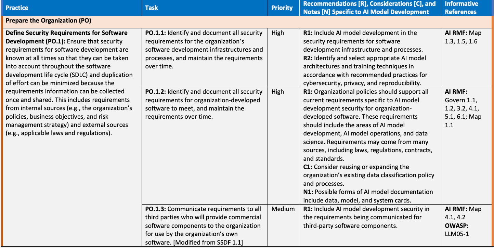
| プラクティス | タスク | 優先度 | AIモデル開発に固有の推奨事項 [R]、考慮事項 [C]、および | 参考 |
| 注記 [N] | 情報 | |||
| 組織を準備する（PO） | ||||
| ソフトウェア開発のセキュリティ要件を定義する（PO.1）：ソフトウェア開発のセキュリティ要件を常に把握し、ソフトウェア開発ライフサイクル（SDLC）全体を通じて考慮できるようにする。また、要件情報を一度収集して共有することで、作業の重複を最小限に抑える。これには、内部情報源（組織の方針、事業目標、リスク管理戦略など）および外部情報源（適用される法令・規制など）の双方からの要件が含まれる。 | PO.1.1：組織のソフトウェア開発基盤およびプロセスに関するすべてのセキュリティ要件を特定・文書化し、継続的に維持する。 | 高 | R1：AIモデル開発をソフトウェア開発基盤およびプロセスのセキュリティ要件に含める。 | AI RMF：Map 1.3、1.5、1.6 |
| R2：サイバーセキュリティ、プライバシーおよび再現性に関する推奨プラクティスに従い、適切なAIモデルのアーキテクチャと訓練技法を特定・選択する。 | ||||
| PO.1.2：組織が開発するソフトウェアに満たすべきすべてのセキュリティ要件を特定・文書化し、継続的に維持する。 | 高 | R1：組織の方針は、組織が開発するソフトウェアに関するAIモデル開発セキュリティ固有の現行要件をすべて支援すべきである。これらの要件にはAIモデル開発、AIモデル運用およびデータサイエンスを含めるべきである。要件は法律、規制、契約、標準など多くの情報源から生じる場合がある。 | AI RMF：Govern 1.1、1.2、3.2、4.1、5.1、6.1；Map 1.1 | |
| C1：組織の既存のデータ分類方針およびプロセスを再利用または拡張することを検討する。 | ||||
| N1：AIモデルの文書化形式には、データカード、モデルカード、システムカードなどがある。 | ||||
| PO.1.3：組織独自のソフトウェアで使用する商用ソフトウェアコンポーネントを提供するすべてのサードパーティに、要件を伝達する。［SSDF 1.1から変更］ | 中 | R1：AIモデル開発セキュリティを、サードパーティ製ソフトウェアコンポーネントに関して伝達する要件に含める。 | AI RMF：Map 4.1、4.2；OWASP：LLM05-1 | |
原本PDFの抜粋画像
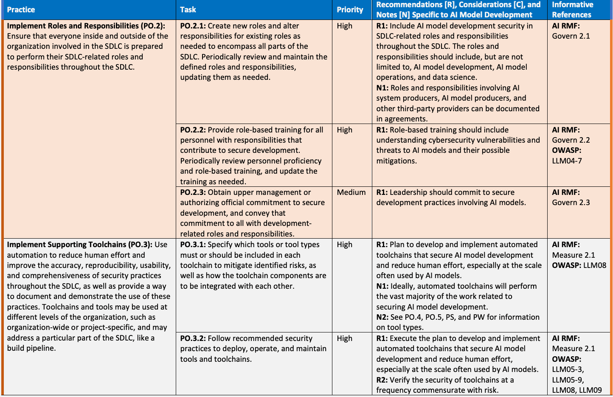
原本PDFの抜粋画像
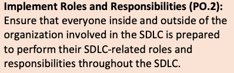
原本PDFの抜粋画像
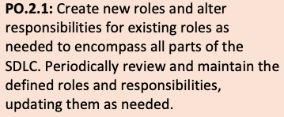
原本PDFの抜粋画像
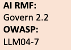
原本PDFの抜粋画像
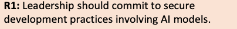
原本PDFの抜粋画像
原本PDFの抜粋画像
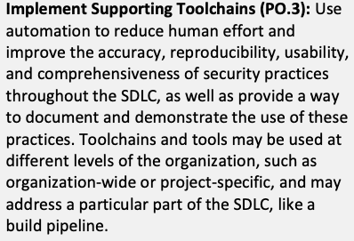
原本PDFの抜粋画像
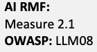
原本PDFの抜粋画像
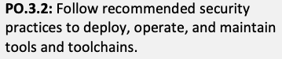
| Practice | Task | Priority | Recommendations [R], Considerations [C], and Notes [N] Specific to AI Model Development | Informative References |
|---|---|---|---|---|
| PO.3.3: Configure tools to generate artifacts of their support of secure software development practices as defined by the organization. | Medium | N1: An artifact is “a piece of evidence” [16]. Evidence is “grounds for belief or disbelief; data on which to base proof or to establish truth or falsehood” [17]. Artifacts provide records of secure software development practices. Examples of artifacts specific to AI model development include attestations of the integrity and provenance of training datasets. | AI RMF: Measure 2.1 | |
| Define and Use Criteria for Software Security Checks (PO.4): Help ensure that the software resulting from the SDLC meets the organization’s expectations by defining and using criteria for checking the software’s security during development. | PO.4.1: Define criteria for software security checks and track throughout the SDLC. | Medium | R1: Implement guardrails and other controls throughout the AI development life cycle, extending beyond the traditional SDLC. C1: Consider requiring review and approval from a human-in-the-loop for software security checks beyond risk-based thresholds. | AI RMF: Measure 2.3, 2.7; Manage 1.1 OWASP: LLM01-2 |
| PO.4.2: Implement processes, mechanisms, etc. to gather and safeguard the necessary information in support of the criteria. | Low | No additions to SSDF 1.1 | AI RMF: Measure 2.3, 2.7; Manage 1.1 OWASP: LLM01-2 | |
| Implement and Maintain Secure Environments for Software Development (PO.5): Ensure that all components of the environments for software development are strongly protected from internal and external threats to prevent compromises of the environments or the software being developed or maintained within them. Examples of environments for software development include development, AI model training, build, test, and distribution environments. [Modified from SSDF 1.1] | PO.5.1: Separate and protect each environment involved in software development. | High | C1: Consider separating execution environments from each other to the extent feasible, such as through isolation, segmentation, containment, access via APIs, or other means. R1: Monitor, track, and limit resource usage and rates for AI model users during model development. R2: Only store sensitive data used during AI model development, including production data, within organization-approved environments and locations within those environments. R3: Protect all training pipelines, model registries, and other components within the environments according to the principle of least privilege. R4: Continuously monitor training-related activity in pipelines and model modifications in the model registry. R5: Follow recommended practices for securely configuring each environment. R6: Continuously monitor each environment for plaintext secrets. | OWASP: LLM01-1, LLM01-4, LLM04, LLM08, LLM10 |
| PO.5.2: Secure and harden development endpoints (endpoints for software designers, developers, testers, builders, etc.) to perform development tasks using a risk-based approach. | Medium | No additions to SSDF 1.1 | OWASP: LLM01-1, LLM05-3, LLM05-9, LLM08 | |
| PO.5.3: Continuously monitor software execution performance and behavior in software development environments to identify potential suspicious activity and other issues. [Not part of SSDF 1.1] | High | R1: Perform continuous security monitoring for all development environment components that host an AI model or related resources (e.g., model APIs, weights, configuration parameters, training datasets). R2: Continuous monitoring and analysis tools should generate alerts when detected activity involving an AI model passes a risk threshold or otherwise merits additional investigation. | AI RMF: Measure 2.4 OWASP: LLM03-7, LLM04, LLM05-8, LLM09, LLM10 |
原本PDFの抜粋画像
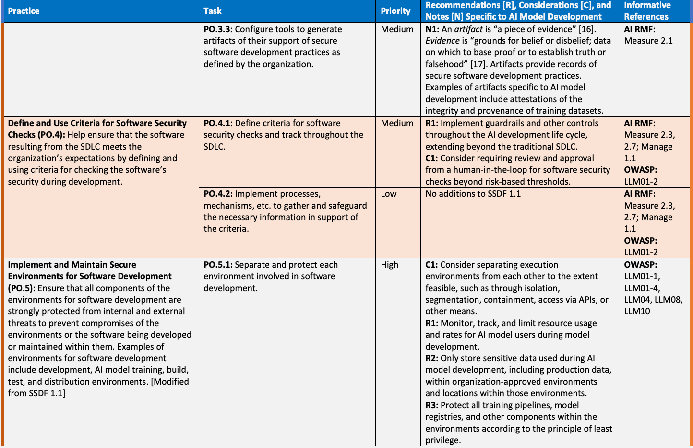
原本照合メモ: 原本18〜19ページの完全なタスク行を統合。PO.3.3のプラクティス欄は前ページからの継続で原本では空欄。PO.5.1のC1/R1〜R6は原本の順序を保持。
| プラクティス | タスク | 優先度 | AIモデル開発に固有の推奨事項［R］、考慮事項［C］、注記［N］ | 参考情報 |
|---|---|---|---|---|
| PO.3.3：組織が定めたセキュアソフトウェア開発プラクティスを支援したことを示す成果物を生成するよう、ツールを構成する。 | 中 | N1：成果物とは「証拠の一片」である[16]。証拠とは「信じる、または信じないための根拠、証明の基礎とする、または真偽を確立するためのデータ」である[17]。成果物はセキュアソフトウェア開発プラクティスの記録を提供する。AIモデル開発に固有の成果物の例として、訓練データセットの完全性と来歴を示す証明がある。 | AI RMF: Measure 2.1 | |
| ソフトウェアセキュリティチェックの基準を定義して使用する（PO.4）：開発中にソフトウェアのセキュリティを確認する基準を定義して使用することで、SDLCの結果として得られるソフトウェアが組織の期待を満たすようにする。 | PO.4.1：ソフトウェアセキュリティチェックの基準を定義し、SDLC全体で追跡する。 | 中 | R1：従来のSDLCを超えて、AI開発ライフサイクル全体にガードレールやその他の管理策を導入する。 C1：リスクに基づく閾値を超えるソフトウェアセキュリティチェックについて、人がプロセスに関与してレビュー・承認することを必須とするか検討する。 | AI RMF: Measure 2.3, 2.7; Manage 1.1 OWASP: LLM01-2 |
| PO.4.2：基準を支えるために必要な情報を収集して保護するプロセスや仕組みなどを導入する。 | 低 | SSDF 1.1への追加なし | AI RMF: Measure 2.3, 2.7; Manage 1.1 OWASP: LLM01-2 | |
| ソフトウェア開発のためのセキュアな環境を導入して維持する（PO.5）：ソフトウェア開発環境のすべての構成要素を内部と外部の脅威から強固に保護し、環境や、その中で開発・保守されるソフトウェアの侵害を防ぐ。ソフトウェア開発環境の例として、開発、AIモデルの訓練、ビルド、試験、配布の環境がある。［SSDF 1.1から変更］ | PO.5.1：ソフトウェア開発に関わる各環境を分離して保護する。 | 高 | C1：隔離、分割、封じ込め、API経由のアクセスなどの手段により、実行環境を実現可能な範囲で相互に分離することを検討する。 R1：モデル開発中に、AIモデル利用者のリソース使用量と使用レートを監視、追跡、制限する。 R2：本番データを含む、AIモデル開発で使用する機微データは、組織が承認した環境と、その環境内の場所にのみ保管する。 R3：最小権限の原則に従い、環境内のすべての訓練パイプライン、モデルレジストリ、その他の構成要素を保護する。 R4：パイプラインでの訓練関連の活動と、モデルレジストリ内のモデルの変更を継続的に監視する。 R5：各環境をセキュアに構成するための推奨プラクティスに従う。 R6：各環境に平文の秘密情報がないか、継続的に監視する。 | OWASP: LLM01-1, LLM01-4, LLM04, LLM08, LLM10 |
| PO.5.2：リスクに基づくアプローチで開発作業を行えるよう、開発エンドポイント（ソフトウェア設計者、開発者、試験担当者、ビルド担当者などのエンドポイント）を保護し、堅牢化する。 | 中 | SSDF 1.1への追加なし | OWASP: LLM01-1, LLM05-3, LLM05-9, LLM08 | |
| PO.5.3：不審な活動やその他の問題の可能性を特定するため、ソフトウェア開発環境におけるソフトウェアの実行性能と動作を継続的に監視する。［SSDF 1.1に含まれない］ | 高 | R1：AIモデルや関連リソース（モデルAPI、重み、構成パラメータ、訓練データセットなど）をホストする、すべての開発環境の構成要素を継続的にセキュリティ監視する。 R2：継続的な監視・分析ツールは、AIモデルに関して検出した活動がリスクの閾値を超えるか、その他の理由で追加調査に値する場合、アラートを生成すべきである。 | AI RMF: Measure 2.4 OWASP: LLM03-7, LLM04, LLM05-8, LLM09, LLM10 |
| Practice | Task | Priority | Recommendations [R], Considerations [C], and Notes [N] Specific to AI Model Development | Informative References |
|---|---|---|---|---|
| Protect Software (PS) | ||||
| Protect All Forms of Code and Data from Unauthorized Access and Tampering (PS.1): Help prevent unauthorized changes to code and data, both inadvertent and intentional, which could circumvent or negate the intended security characteristics of the software. For code and data that are not intended to be publicly accessible, this helps prevent theft of the software and may make it more difficult or time-consuming for attackers to find vulnerabilities in the software. [Modified from SSDF 1.1] | PS.1.1: Store all forms of code – including source code, executable code, and configuration-as-code – based on the principle of least privilege so that only authorized personnel, tools, services, etc. have access. | High | R1: Secure code storage should include AI models, model weights, pipelines, reward models, and any other AI model elements that need their confidentiality, integrity, and/or availability protected. These elements do not all have to be stored in the same place or through the same type of mechanism. R2: Follow the principle of least privilege to minimize direct access to AI models and model elements regardless of where they are stored or executed. R3: Store reward models separately from AI models and data. R4: Permit indirect access only to model weights. C1: Consider preventing all human access to model weights. C2: Consider requiring all AI model development to be performed within organization-approved environments only. | OWASP: LLM10 |
| PS.1.2: Protect all training, testing, fine-tuning, and aligning data from unauthorized access and modification. [Not part of SSDF 1.1] | High | R1: Continuously monitor the confidentiality (for non-public data only) and integrity of training, testing, fine-tuning, and aligning data. C1: Consider securely storing training, testing, fine-tuning, and aligning data for future use and reference if feasible. | OWASP: LLM03, LLM06, LLM10 | |
| PS.1.3: Protect all model weights and configuration parameter data from unauthorized access and modification. [Not part of SSDF 1.1] | High | R1: Keep model weights and configuration parameters separate from training, testing, fine-tuning, and aligning data. R2: Continuously monitor the confidentiality (for closed models only) and integrity of model weights and configuration parameters. R3: Follow the principle of least privilege to restrict access to AI model weights, configuration parameters, and services during development. R4: Specify and implement additional risk-proportionate cybersecurity practices around model weights, such as encryption, cryptographic hashes, digital signatures, multi-party authorization, and air-gapped environments. | OWASP: LLM10 | |
| Provide a Mechanism for Verifying Software Release Integrity (PS.2): Help software acquirers ensure that the software they acquire is legitimate and has not been tampered with. | PS.2.1: Make software integrity verification information available to software acquirers. | Medium | R1: Generate and provide cryptographic hashes or digital signatures for an AI model and its components, artifacts, and documentation. R2: Provide digital signatures for AI model changes. | OWASP: LLM05-6 |
| Archive and Protect Each Software Release (PS.3): Preserve software releases in order to help identify, analyze, and eliminate vulnerabilities discovered in the software after release. | PS.3.1: Securely archive the necessary files and supporting data (e.g., integrity verification information, provenance data) to be retained for each software release. | Low | R1: Perform versioning and tracking for infrastructure tools (e.g., pre-processing, transforms, collection) that support dataset creation and model training. R2: Include documentation of the justification for AI model selection in the retained information. R3: Include documentation of the entire training process, such as data preprocessing and model architecture. N1: AI models and their components may need to be added at this time to an organization’s asset inventories. | OWASP: LLM10 |
| PS.3.2: Collect, safeguard, maintain, and share provenance data for all components of each software release (e.g., in a software bill of materials [SBOM], through Supply-chain Levels for Software Artifacts [SLSA]). [Modified from SSDF 1.1] | Medium | R1: Track the provenance of an AI model and its components and derivatives, including the training libraries, frameworks, and pipelines used to build the model. R2: Track AI models that were trained on sensitive data (e.g., payment card data, protected health information, other types of personally identifiable information), and determine if access to the models should be restricted to individuals who already have access to the sensitive data used for training. C1: Consider disclosing the provenance of the training, testing, fine-tuning, and aligning data used for an AI model. | OWASP: LLM03-1, LLM05-4, LLM05-5, LLM10 | |
原本PDFの抜粋画像
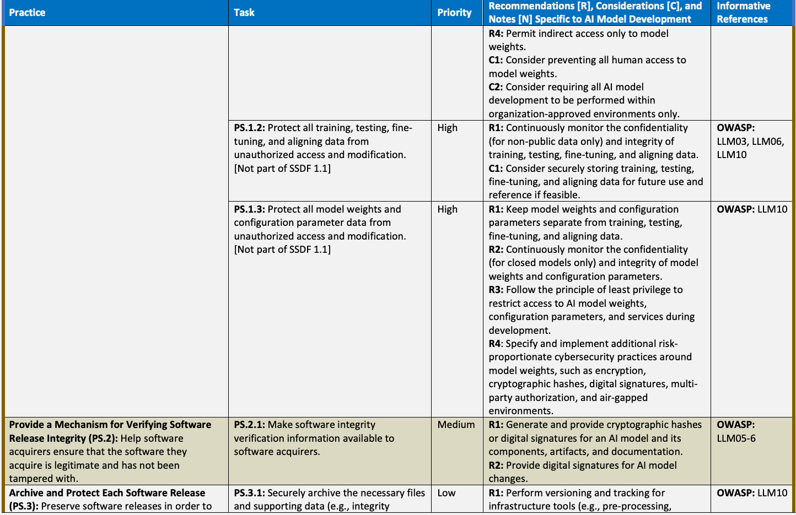
原本照合メモ: 原本19〜21ページの保護策を統合。PS.1.1のR4/C1/C2、PS.3の定義、PS.3.1のタスクとR1を全文で接続した。各行の優先度と参考情報を保持。
| プラクティス | タスク | 優先度 | AIモデル開発に固有の推奨事項［R］、考慮事項［C］、注記［N］ | 参考情報 |
|---|---|---|---|---|
| ソフトウェアの保護（PS） | ||||
| あらゆる形態のコードとデータを不正アクセスと改ざんから保護する（PS.1）：ソフトウェアに意図されたセキュリティ上の特性を回避・無効化しかねない、意図しないものも意図的なものも含む不正なコード・データの変更の防止を支援する。公開を意図していないコードとデータでは、これによってソフトウェアの窃取を防ぎ、攻撃者がソフトウェアの脆弱性を発見することをより困難にしたり、時間がかかるようにしたりできる場合がある。［SSDF 1.1から変更］ | PS.1.1：ソースコード、実行可能コード、構成をコードとして記述したものを含む、あらゆる形態のコードを最小権限の原則に基づいて保管し、許可された要員、ツール、サービスなどだけがアクセスできるようにする。 | 高 | R1：セキュアなコード保管には、AIモデル、モデルの重み、パイプライン、報酬モデル、および機密性、完全性、可用性のいずれか、または複数の保護が必要なその他のAIモデル要素を含めるべきである。これらすべてを同じ場所に、または同じ種類の仕組みで保管する必要はない。 R2：保管場所や実行場所にかかわらず、最小権限の原則に従ってAIモデルとモデル要素への直接アクセスを最小化する。 R3：報酬モデルは、AIモデルやデータとは分けて保管する。 R4：モデルの重みには、間接アクセスだけを許可する。 C1：モデルの重みへの人間によるアクセスをすべて防止することを検討する。 C2：すべてのAIモデル開発を組織が承認した環境内だけで行うことを必須とするか検討する。 | OWASP: LLM10 |
| PS.1.2：訓練、試験、ファインチューニング、アライメント用のすべてのデータを、不正アクセスと改変から保護する。［SSDF 1.1に含まれない］ | 高 | R1：訓練、試験、ファインチューニング、アライメント用データの機密性（非公開データのみ）と完全性を継続的に監視する。 C1：実現可能であれば、将来の利用と参照に備え、訓練、試験、ファインチューニング、アライメント用データをセキュアに保管することを検討する。 | OWASP: LLM03, LLM06, LLM10 | |
| PS.1.3：すべてのモデルの重みと構成パラメータデータを、不正アクセスと改変から保護する。［SSDF 1.1に含まれない］ | 高 | R1：モデルの重みと構成パラメータを、訓練、試験、ファインチューニング、アライメント用データから分離して保管する。 R2：モデルの重みと構成パラメータの機密性（クローズドモデルのみ）と完全性を継続的に監視する。 R3：最小権限の原則に従い、開発中のAIモデルの重み、構成パラメータ、サービスへのアクセスを制限する。 R4：暗号化、暗号学的ハッシュ、デジタル署名、複数当事者による承認、エアギャップ環境など、モデルの重みに関する、リスクに応じた追加のサイバーセキュリティプラクティスを定めて実施する。 | OWASP: LLM10 | |
| ソフトウェアリリースの完全性を検証する仕組みを提供する（PS.2）：ソフトウェア取得者が、取得するソフトウェアが正当なものであり、改ざんされていないことを確認できるよう支援する。 | PS.2.1：ソフトウェア取得者がソフトウェアの完全性の検証情報を利用できるようにする。 | 中 | R1：AIモデルとその構成要素、成果物、文書について、暗号学的ハッシュまたはデジタル署名を生成して提供する。 R2：AIモデルの変更についてデジタル署名を提供する。 | OWASP: LLM05-6 |
| 各ソフトウェアリリースをアーカイブして保護する（PS.3）：リリース後にソフトウェアで発見された脆弱性の特定、分析、除去に役立てるため、ソフトウェアリリースを保存する。 | PS.3.1：各ソフトウェアリリースについて保持する必要なファイルと裏付けデータ（完全性の検証情報、来歴データなど）を、安全にアーカイブする。 | 低 | R1：データセットの作成とモデルの訓練を支えるインフラツール（前処理、変換、収集など）について、バージョン管理と追跡を行う。 R2：保持する情報に、AIモデルを選択した根拠を記載した文書を含める。 R3：データの前処理やモデルアーキテクチャなど、訓練プロセス全体を記載した文書を含める。 N1：この時点で、AIモデルとその構成要素を組織の資産台帳へ追加する必要がある場合がある。 | OWASP: LLM10 |
| PS.3.2：各ソフトウェアリリースのすべての構成要素の来歴データを収集、保護、維持、共有する（ソフトウェア部品表［SBOM］やSupply-chain Levels for Software Artifacts［SLSA］を通じて行うなど）。［SSDF 1.1から変更］ | 中 | R1：モデルの構築に使った訓練ライブラリ、フレームワーク、パイプラインを含め、AIモデルとその構成要素・派生物の来歴を追跡する。 R2：機微データ（決済カードデータ、保護対象の健康情報、その他の個人識別可能な情報など）で訓練したAIモデルを追跡する。モデルへのアクセスを、その訓練に使った機微データへのアクセス権を既に持つ人だけに制限すべきか判断する。 C1：AIモデルに使用した訓練、試験、ファインチューニング、アライメント用データの来歴を開示することを検討する。 | OWASP: LLM03-1, LLM05-4, LLM05-5, LLM10 | |
| Practice | Task | Priority | Recommendations [R], Considerations [C], and Notes [N] Specific to AI Model Development | Informative References |
|---|---|---|---|---|
| Produce Well-Secured Software (PW) | ||||
| Design Software to Meet Security Requirements and Mitigate Security Risks (PW.1): Identify and evaluate the security requirements for the software; determine what security risks the software is likely to face during operation and how the software’s design and architecture should mitigate those risks; and justify any cases where risk-based analysis indicates that security requirements should be relaxed or waived. Addressing security requirements and risks during software design (secure by design) is key for improving software security and also helps improve development efficiency. | PW.1.1: Use forms of risk modeling – such as threat modeling, attack modeling, or attack surface mapping – to help assess the security risk for the software. | High | R1: Incorporate relevant AI model-specific vulnerability and threat types in risk modeling. Examples of these vulnerability and threat types include poisoning of training data, malicious code or other unwanted content in inputs and outputs, denial-of-service conditions arising from adversarial prompts, supply chain attacks, unauthorized information disclosure, theft of AI model weights, and misconfiguration of data pipelines. [3] C1: Consider periodic risk modeling updates for future AI model versions and derivatives after AI model release. C2: During risk modeling, consider checking that the AI model is not in a critical path to make significant security decisions without a human in the loop. | AI RMF: Govern 4.1, 4.2; Map 5.1; Measure 1.1; Manage 1.2, 1.3 OWASP: LLM01, LLM02, LLM03, LLM04, LLM05, LLM06, LLM07, LLM08, LLM09, LLM10 |
| PW.1.2: Track and maintain the software’s security requirements, risks, and design decisions. | Medium | No additions to SSDF 1.1 | AI RMF: Govern 4.1, 4.2; Map 2.1, 2.2, 2.3, 3.2, 3.3, 4.1, 4.2, 5.2; Manage 1.2, 1.3, 1.4 | |
| PW.1.3: Where appropriate, build in support for using standardized security features and services (e.g., enabling software to integrate with existing log management, identity management, access control, and vulnerability management systems) instead of creating proprietary implementations of security features and services. | Medium | No additions to SSDF 1.1 | ||
| Review the Software Design to Verify Compliance with Security Requirements and Risk Information (PW.2): Help ensure that the software will meet the security requirements and satisfactorily address the identified risk information. | PW.2.1: Have 1) a qualified person (or people) who were not involved with the design and 2) automated processes instantiated in the toolchain review the software design to confirm and enforce that it meets all of the security requirements and satisfactorily addresses the identified risk information. [Modified from SSDF 1.1] | High | No additions to SSDF 1.1 | AI RMF: Measure 2.7; Manage 1.1 |
原本PDFの抜粋画像
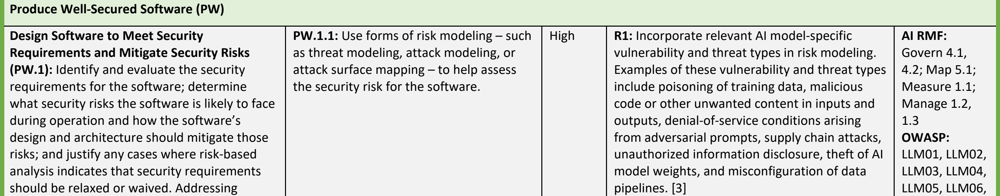
原本照合メモ: 原本21〜22ページのPW.1/PW.2を統合。PW.1の定義、PW.1.1のC1/C2とOWASP参照の続きまで保持。次のPW.3.1は別の未確認ブロックとした。
| プラクティス | タスク | 優先度 | AIモデル開発に固有の推奨事項［R］、考慮事項［C］、注記［N］ | 参考情報 |
|---|---|---|---|---|
| セキュアなソフトウェアの作成（PW） | ||||
| セキュリティ要件を満たし、セキュリティリスクを軽減するようソフトウェアを設計する（PW.1）：ソフトウェアのセキュリティ要件を特定して評価する。運用中に直面する可能性のあるセキュリティリスクと、ソフトウェアの設計・アーキテクチャでそのリスクを軽減する方法を判断する。リスクに基づく分析によってセキュリティ要件の緩和や免除が妥当とされる場合は、その根拠を示す。ソフトウェア設計時にセキュリティ要件とリスクへ対処すること（セキュア・バイ・デザイン）は、ソフトウェアセキュリティの向上に不可欠であり、開発効率の向上にも役立つ。 | PW.1.1：脅威モデリング、攻撃モデリング、攻撃対象領域のマッピングなどのリスクモデリングを用いて、ソフトウェアのセキュリティリスクの評価を支援する。 | 高 | R1：関連するAIモデル固有の脆弱性・脅威の種類を、リスクモデリングに組み込む。例として、訓練データのポイズニング、入出力の悪意あるコードやその他の望ましくない内容、敵対的プロンプトによって生じるサービス拒否状態、サプライチェーン攻撃、不正な情報開示、AIモデルの重みの窃取、データパイプラインの設定不備がある。[3] C1：AIモデルのリリース後、将来のモデルの版や派生物に向けてリスクモデリングを定期的に更新することを検討する。 C2：リスクモデリング中に、人が関与せずに重要なセキュリティ上の意思決定を行うクリティカルパスへAIモデルが組み込まれていないことを確認するか検討する。 | AI RMF: Govern 4.1, 4.2; Map 5.1; Measure 1.1; Manage 1.2, 1.3 OWASP: LLM01, LLM02, LLM03, LLM04, LLM05, LLM06, LLM07, LLM08, LLM09, LLM10 |
| PW.1.2：ソフトウェアのセキュリティ要件、リスク、設計上の意思決定を追跡して維持する。 | 中 | SSDF 1.1への追加なし | AI RMF: Govern 4.1, 4.2; Map 2.1, 2.2, 2.3, 3.2, 3.3, 4.1, 4.2, 5.2; Manage 1.2, 1.3, 1.4 | |
| PW.1.3：必要に応じて、独自のセキュリティ機能・サービスを実装する代わりに、標準化されたセキュリティ機能・サービスを利用できるようにする（既存のログ管理、ID管理、アクセス制御、脆弱性管理のシステムとソフトウェアを統合できるようにするなど）。 | 中 | SSDF 1.1への追加なし | ||
| ソフトウェア設計をレビューし、セキュリティ要件とリスク情報への適合を検証する（PW.2）：ソフトウェアがセキュリティ要件を満たし、特定したリスク情報に適切に対処できるよう支援する。 | PW.2.1：1）設計に関与していない適格な担当者、および2）ツールチェーンに組み込まれた自動化プロセスにソフトウェア設計をレビューさせ、すべてのセキュリティ要件を満たし、特定したリスク情報に適切に対処していることを確認して、その充足を徹底する。［SSDF 1.1から変更］ | 高 | SSDF 1.1への追加なし | AI RMF: Measure 2.7; Manage 1.1 |
| Practice | Task | Priority | Recommendations [R], Considerations [C], and Notes [N] Specific to AI Model Development | Informative References |
|---|---|---|---|---|
| Confirm the Integrity of Training, Testing, Fine-Tuning, and Aligning Data Before Use (PW.3): Prevent data that is likely to negatively impact the cybersecurity of the AI model from being consumed as part of AI model training, testing, fine-tuning, and aligning. [Not part of SSDF 1.1] | PW.3.1: Analyze data for signs of data poisoning, bias, homogeneity, and tampering before using it for AI model training, testing, fine-tuning, or aligning purposes, and mitigate the risks as necessary. [Not part of SSDF 1.1] | High | R1: Verify the provenance (when known) and integrity of training, testing, fine-tuning, and aligning data before use. R2: Select and apply appropriate methods for analyzing and altering the training, testing, fine-tuning, and aligning data for an AI model. Examples of methods include anomaly detection, bias detection, data cleaning, data curation, data filtering, data sanitization, fact-checking, and noise reduction. C1: Consider using a human-in-the-loop to examine data, such as with exploratory data analysis techniques [18]. | AI RMF: Measure 2.1; Manage 1.2, 1.3 OWASP: LLM03, LLM06 |
| PW.3.2: Track the provenance, when known, of all training, testing, fine-tuning, and aligning data used for an AI model, and document which data do not have known provenance. [Not part of SSDF 1.1] | Medium | N1: Provenance verification is not possible in all cases because provenance is not always known. However, it is still beneficial for security purposes to track and verify provenance whenever possible, and to track when provenance is unknown. | AI RMF: Measure 2.1 OWASP: LLM03-1 Adv ML | |
| PW.3.3: Include adversarial samples in the training and testing data to improve attack prevention. [Not part of SSDF 1.1] | Medium | R1: Use a process and corresponding controls to test the adversarial samples and put appropriate guardrails on training and testing use. | OWASP: LLM03-6, LLM05-7 Adv ML | |
| Reuse Existing, Well-Secured Software When Feasible Instead of Duplicating Functionality (PW.4): Lower the costs of software development, expedite software development, and decrease the likelihood of introducing additional security vulnerabilities into the software by reusing software modules and services that have already had their security posture checked. This is particularly important for software that implements security functionality, such as cryptographic modules and protocols. | PW.4.1: Acquire and maintain well-secured software components (e.g., software libraries, modules, middleware, frameworks) from commercial, open-source, and other third-party developers for use by the organization’s software. | Medium | C1: Consider using an existing AI model instead of creating a new one. | OWASP: LLM05 |
| PW.4.2: Create and maintain well-secured software components in-house following SDLC processes to meet common internal software development needs that cannot be better met by third-party software components. | Low | No additions to SSDF 1.1 | ||
| PW.4.4: Verify that acquired commercial, open-source, and all other third-party software components comply with the requirements, as defined by the organization, throughout their life cycles. | High | R1: Verify the integrity, provenance, and security of an existing AI model or any other acquired AI components — including training, testing, fine-tuning, and aligning datasets; reward models; adaptation layers; and configuration parameters — before using them. R2: Scan and thoroughly test acquired AI models and their components for vulnerabilities and malicious content before use. | OWASP: LLM05-2, LLM05-6 Adv ML | |
| Create Source Code by Adhering to Secure Coding Practices (PW.5): Decrease the number of security vulnerabilities in the software, and reduce costs by minimizing vulnerabilities introduced during source code creation that meet or exceed organization-defined vulnerability severity criteria. | PW.5.1: Follow all secure coding practices that are appropriate to the development languages and environment to meet the organization’s requirements. | High | R1: Expand secure coding practices to include AI technology-specific considerations. R2: Code the handling of inputs (including prompts and user data) and outputs carefully. All inputs and outputs should be logged, analyzed, and validated within the context of the AI model, and those with issues should be sanitized or dropped. R3: Encode inputs and outputs to prevent the execution of unauthorized code. | AI RMF: Manage 1.2, 1.3, 1.4 OWASP: LLM01, LLM02, LLM04-1, LLM06, LLM07, LLM09-9, LLM10 |
| Configure the Compilation, Interpreter, and Build Processes to Improve Executable Security (PW.6): Decrease the number of security vulnerabilities in the software and reduce costs by eliminating vulnerabilities before testing occurs. | PW.6.1: Use compiler, interpreter, and build tools that offer features to improve executable security. | Low | C1: Consider using secure model serialization mechanisms that reduce or eliminate vectors for the introduction of malicious content. | |
| PW.6.2: Determine which compiler, interpreter, and build tool features should be used and how each should be configured, then implement and use the approved configurations. | Low | C1: Consider capturing compiler, interpreter, and build tool versions and features as part of the provenance tracking. | ||
| Review and/or Analyze Human-Readable Code to Identify Vulnerabilities and Verify Compliance with Security Requirements (PW.7): Help identify vulnerabilities so that they can be corrected before the software is released to prevent exploitation. Using automated methods lowers the effort and resources needed to detect vulnerabilities. Human-readable code includes source code, scripts, and any other form of code that an organization deems human-readable. | PW.7.1: Determine whether code review (a person looks directly at the code to find issues) and/or code analysis (tools are used to find issues in code, either in a fully automated way or in conjunction with a person) should be used, as defined by the organization. | Medium | R1: Code review and analysis policies or guidelines should include code for AI models and other related components. C1: Consider performing scans of AI model code in addition to testing the AI models. | |
| PW.7.2: Perform the code review and/or code analysis based on the organization’s secure coding standards, and record and triage all discovered issues and recommended remediations in the development team’s workflow or issue tracking system. | High | R1: Scan all AI models for malware, vulnerabilities, backdoors, and other security issues in accordance with the organization’s code review and analysis policies or guidelines. | AI RMF: Measure 2.3, 2.7; Manage 1.1, 1.2, 1.3, 1.4 OWASP: LLM03-7d, LLM07-4 | |
| Test Executable Code to Identify Vulnerabilities and Verify Compliance with Security Requirements (PW.8): Help identify vulnerabilities so that they can be corrected before the software is released in order to prevent exploitation. Using automated methods lowers the effort and resources needed to detect vulnerabilities and improves traceability and repeatability. Executable code includes binaries, directly executed bytecode and source code, and any other form of code that an organization deems executable. | PW.8.1: Determine whether executable code testing should be performed to find vulnerabilities not identified by previous reviews, analysis, or testing and, if so, which types of testing should be used. | High | R1: Include AI models in code testing policies and guidelines. Several forms of code testing can be used for AI models, including unit testing, integration testing, penetration testing, red teaming, use case testing, and adversarial testing. C1: Consider automating tests within a development pipeline as part of regression testing where possible. | |
| PW.8.2: Scope the testing, design the tests, perform the testing, and document the results, including recording and triaging all discovered issues and recommended remediations in the development team’s workflow or issue tracking system. | High | R1: Test all AI models for vulnerabilities in accordance with the organization’s code testing policies or guidelines. R2: Retest AI models when they are retrained or new data sources are added. | AI RMF: Measure 2.2, 2.3, 2.7; Manage 1.1, 1.2, 1.3, 1.4 OWASP: LLM03-7d, LLM05-7, LLM07-4 | |
| Configure Software to Have Secure Settings by Default (PW.9): Help improve the security of the software at the time of installation to reduce the likelihood of the software being deployed with weak security settings, putting it at greater risk of compromise. | PW.9.1: Define a secure baseline by determining how to configure each setting that has an effect on security or a security-related setting so that the default settings are secure and do not weaken the security functions provided by the platform, network infrastructure, or services. | Medium | No additions to SSDF 1.1 | AI RMF: Measure 2.7 |
| PW.9.2: Implement the default settings (or groups of default settings, if applicable), and document each setting for software administrators. | Medium | N1: Documenting settings can be performed earlier in the process, such as when defining a secure baseline (see PW.9.1). | AI RMF: Measure 2.7; Manage 1.2, 1.3, 1.4 |
原本PDFの抜粋画像
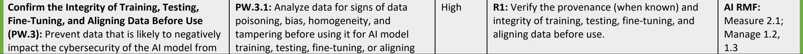
原本照合メモ: 原本22〜25ページのPW.3〜PW.9を復元。PW.3.1の定義・タスク・R2/C1、PW.4.4のタスクとR1/R2、PW.7.2のタスクと参考情報をページ間で接続。PW.4.3は原本にないため追加していない。
| プラクティス | タスク | 優先度 | AIモデル開発に固有の推奨事項［R］、考慮事項［C］、注記［N］ | 参考情報 |
|---|---|---|---|---|
| 使用前に訓練・テスト・ファインチューニング・アラインメント用データの完全性を確認する（PW.3）：AIモデルのサイバーセキュリティに悪影響を及ぼす可能性が高いデータが、AIモデルの訓練、テスト、ファインチューニング、アラインメントで使用されることを防ぐ。［SSDF 1.1には含まれない］ | PW.3.1：AIモデルの訓練、テスト、ファインチューニング、アラインメントにデータを使用する前に、データポイズニング、バイアス、均質性、改ざんの兆候がないかデータを分析し、必要に応じてリスクを軽減する。［SSDF 1.1には含まれない］ | 高 | R1：訓練・テスト・ファインチューニング・アラインメント用データの来歴（判明している場合）と完全性を、使用前に検証する。 R2：AIモデルの訓練・テスト・ファインチューニング・アラインメント用データを分析・変更するための適切な方法を選び、適用する。方法の例には、異常検知、バイアス検出、データクリーニング、データキュレーション、データフィルタリング、データサニタイズ、ファクトチェック、ノイズ低減がある。 C1：探索的データ分析の手法［18］などを使い、人を介在させてデータを調べることを検討する。 | AI RMF: Measure 2.1; Manage 1.2, 1.3 OWASP: LLM03, LLM06 |
| PW.3.2：AIモデルで使用するすべての訓練・テスト・ファインチューニング・アラインメント用データについて、来歴が判明している場合はそれを追跡し、来歴が不明なデータを文書化する。［SSDF 1.1には含まれない］ | 中 | N1：来歴は常に判明しているとは限らないため、すべての場合に来歴を検証できるわけではない。それでも、可能な限り来歴を追跡・検証し、来歴が不明な場合にはそのことを追跡するのは、セキュリティ上有益である。 | AI RMF: Measure 2.1 OWASP: LLM03-1 Adv ML | |
| PW.3.3：攻撃の防止能力を向上させるため、訓練データとテストデータに敵対的サンプルを含める。［SSDF 1.1には含まれない］ | 中 | R1：敵対的サンプルをテストするためのプロセスと対応する管理策を使用し、訓練とテストでの使用に適切なガードレールを設ける。 | OWASP: LLM03-6, LLM05-7 Adv ML | |
| 機能を重複して実装する代わりに、可能な場合は既存の十分に保護されたソフトウェアを再利用する（PW.4）：セキュリティの状態がすでに確認されているソフトウェアモジュールやサービスを再利用し、ソフトウェア開発の費用を削減し、開発を迅速化し、ソフトウェアに新たなセキュリティ脆弱性を持ち込む可能性を低減する。これは、暗号モジュールやプロトコルなど、セキュリティ機能を実装するソフトウェアで特に重要である。 | PW.4.1：組織のソフトウェアで使用するため、商用、オープンソース、その他の第三者の開発者から、十分に保護されたソフトウェアコンポーネント（ソフトウェアライブラリ、モジュール、ミドルウェア、フレームワークなど）を取得し、維持する。 | 中 | C1：新しいAIモデルを作成する代わりに、既存のAIモデルを使用することを検討する。 | OWASP: LLM05 |
| PW.4.2：第三者のソフトウェアコンポーネントでは十分に満たせない社内共通のソフトウェア開発ニーズに対応するため、SDLCのプロセスに従い、十分に保護されたソフトウェアコンポーネントを社内で作成し、維持する。 | 低 | SSDF 1.1への追加事項なし | ||
| PW.4.4：取得した商用、オープンソース、およびその他すべての第三者のソフトウェアコンポーネントが、そのライフサイクル全体を通じて組織の定める要件に適合していることを検証する。 | 高 | R1：既存のAIモデルや、取得したその他のAIコンポーネント（訓練・テスト・ファインチューニング・アラインメント用データセット、報酬モデル、適応層、構成パラメーターを含む）を使用する前に、その完全性、来歴、セキュリティを検証する。 R2：取得したAIモデルとそのコンポーネントについて、使用前に脆弱性や悪意のあるコンテンツがないかスキャンし、十分にテストする。 | OWASP: LLM05-2, LLM05-6 Adv ML | |
| セキュアコーディングのプラクティスに従ってソースコードを作成する（PW.5）：ソフトウェアのセキュリティ脆弱性を減らし、ソースコードの作成時に持ち込まれる、組織が定めた深刻度の基準以上の脆弱性を最小限に抑えることで費用を削減する。 | PW.5.1：組織の要件を満たすため、開発言語と開発環境に適したすべてのセキュアコーディングのプラクティスに従う。 | 高 | R1：セキュアコーディングのプラクティスを拡張し、AI技術に固有の考慮事項を含める。 R2：入力（プロンプトとユーザーデータを含む）と出力の処理を慎重にコーディングする。すべての入力と出力を記録し、AIモデルの文脈に即して分析・検証し、問題のあるものはサニタイズするか破棄するべきである。 R3：不正なコードの実行を防ぐため、入力と出力をエンコードする。 | AI RMF: Manage 1.2, 1.3, 1.4 OWASP: LLM01, LLM02, LLM04-1, LLM06, LLM07, LLM09-9, LLM10 |
| コンパイル、インタープリター、ビルドのプロセスを設定し、実行可能コードのセキュリティを向上させる（PW.6）：テストを実施する前に脆弱性を除去することで、ソフトウェアのセキュリティ脆弱性を減らし、費用を削減する。 | PW.6.1：実行可能コードのセキュリティを向上させる機能を備えたコンパイラー、インタープリター、ビルドツールを使用する。 | 低 | C1：悪意のあるコンテンツの侵入経路を減らすか排除する、安全なモデルのシリアライズ機構の使用を検討する。 | |
| PW.6.2：使用すべきコンパイラー、インタープリター、ビルドツールの機能と各機能の設定方法を決定し、承認された設定を実装して使用する。 | 低 | C1：来歴の追跡の一環として、コンパイラー、インタープリター、ビルドツールのバージョンと機能を記録することを検討する。 | ||
| 人が読めるコードをレビューおよび／または解析し、脆弱性を特定してセキュリティ要件への適合を検証する（PW.7）：悪用を防ぐため、ソフトウェアのリリース前に修正できるよう脆弱性の特定を支援する。自動化された方法を使用すると、脆弱性の検出に必要な労力と資源を減らせる。人が読めるコードには、ソースコード、スクリプト、および組織が人に読めるとみなすその他のあらゆる形式のコードが含まれる。 | PW.7.1：組織の定めに従い、コードレビュー（人がコードを直接読んで問題を見つける）および／またはコード解析（ツールを使い、完全に自動化するか人と組み合わせてコードの問題を見つける）を使用すべきかを決定する。 | 中 | R1：コードレビューとコード解析の方針または指針には、AIモデルとその他の関連コンポーネントのコードを含めるべきである。 C1：AIモデルのテストに加え、AIモデルのコードをスキャンすることを検討する。 | |
| PW.7.2：組織のセキュアコーディング標準に基づいてコードレビューおよび／またはコード解析を実施し、発見したすべての問題と推奨される修復策を、開発チームのワークフローまたは課題追跡システムに記録し、トリアージする。 | 高 | R1：組織のコードレビュー・コード解析の方針または指針に従い、すべてのAIモデルをスキャンして、マルウェア、脆弱性、バックドア、その他のセキュリティ上の問題を調べる。 | AI RMF: Measure 2.3, 2.7; Manage 1.1, 1.2, 1.3, 1.4 OWASP: LLM03-7d, LLM07-4 | |
| 実行可能コードをテストし、脆弱性を特定してセキュリティ要件への適合を検証する（PW.8）：悪用を防ぐため、ソフトウェアのリリース前に修正できるよう脆弱性の特定を支援する。自動化された方法を使用すると、脆弱性の検出に必要な労力と資源を減らし、追跡可能性と再現性を向上できる。実行可能コードには、バイナリ、直接実行されるバイトコードとソースコード、および組織が実行可能とみなすその他のあらゆる形式のコードが含まれる。 | PW.8.1：過去のレビュー、解析、テストでは特定できなかった脆弱性を見つけるために、実行可能コードのテストを実施すべきか、実施する場合はどの種類のテストを使用すべきかを決定する。 | 高 | R1：コードテストの方針と指針にAIモデルを含める。AIモデルには、単体テスト、統合テスト、ペネトレーションテスト、レッドチーミング、ユースケーステスト、敵対的テストなど、いくつかの形式のコードテストを使用できる。 C1：可能な場合は、回帰テストの一環として開発パイプライン内のテストを自動化することを検討する。 | |
| PW.8.2：テストの範囲を定め、テストを設計・実施し、結果を文書化する。その際、発見したすべての問題と推奨される修復策を、開発チームのワークフローまたは課題追跡システムに記録し、トリアージする。 | 高 | R1：組織のコードテストの方針または指針に従い、すべてのAIモデルに脆弱性のテストを実施する。 R2：AIモデルを再訓練した場合、または新たなデータソースを追加した場合は、AIモデルを再テストする。 | AI RMF: Measure 2.2, 2.3, 2.7; Manage 1.1, 1.2, 1.3, 1.4 OWASP: LLM03-7d, LLM05-7, LLM07-4 | |
| デフォルトで安全な設定になるようソフトウェアを構成する（PW.9）：インストール時のソフトウェアのセキュリティ向上を支援し、侵害のリスクを高める弱いセキュリティ設定でソフトウェアが配備される可能性を低減する。 | PW.9.1：セキュリティに影響する設定やセキュリティ関連の設定について、安全なデフォルト設定となり、プラットフォーム、ネットワーク基盤、サービスが提供するセキュリティ機能を弱めないように、各設定の構成方法を決定して安全なベースラインを定義する。 | 中 | SSDF 1.1への追加事項なし | AI RMF: Measure 2.7 |
| PW.9.2：デフォルト設定（該当する場合はデフォルト設定のグループ）を実装し、ソフトウェア管理者向けに各設定を文書化する。 | 中 | N1：設定の文書化は、安全なベースラインを定義する時点（PW.9.1参照）など、プロセスのより早い段階でも実施できる。 | AI RMF: Measure 2.7; Manage 1.2, 1.3, 1.4 |
| Practice | Task | Priority | Recommendations [R], Considerations [C], and Notes [N] Specific to AI Model Development | Informative References |
|---|---|---|---|---|
| Respond to Vulnerabilities (RV) | ||||
| Identify and Confirm Vulnerabilities on an Ongoing Basis (RV.1): Help ensure that vulnerabilities are identified more quickly so that they can be remediated more quickly in accordance with risk, reducing the window of opportunity for attackers. | RV.1.1: Gather information from software acquirers, users, and public sources on potential vulnerabilities in the software and third-party components that the software uses, and investigate all credible reports. | High | R1: Log, monitor, and analyze all inputs and outputs for AI models to detect possible security and performance issues (see PO.5.3). R2: Make the users of AI models aware of mechanisms for reporting potential security and performance issues. N1: In this context, “users” refers to AI system producers and acquirers who are using an AI model. R3: Monitor vulnerability and incident databases for information on AI-related concerns, including the machine learning frameworks and libraries used to build AI models. | AI RMF: Govern 4.3, 5.1, 6.1, 6.2; Measure 1.2, 2.4, 2.5, 2.7, 3.1, 3.2, 3.3; Manage 4.1 OWASP: LLM03-7a, LLM09, LLM10 |
| RV.1.2: Review, analyze, and/or test the software’s code to identify or confirm the presence of previously undetected vulnerabilities. | Medium | R1: Scan and test AI models frequently to identify previously undetected vulnerabilities. R2: Rely mainly on automation for ongoing scanning and testing, and involve a human-in-the-loop as needed. R3: Conduct periodic audits of AI models. | AI RMF: Govern 4.3; Measure 1.3, 2.4, 2.7, 3.1; Manage 4.1 OWASP: LLM03-7b, LLM03-7d | |
| RV.1.3: Have a policy that addresses vulnerability disclosure and remediation, and implement the roles, responsibilities, and processes needed to support that policy. | Medium | R1: Include AI model vulnerabilities in organization vulnerability disclosure and remediation policies. R2: Make users of AI models aware of their inherent limitations and how to report any cybersecurity problems that they encounter. | AI RMF: Govern 4.3, 5.1, 6.1; Measure 3.1, 3.3; Manage 4.3 | |
| Assess, Prioritize, and Remediate Vulnerabilities (RV.2): Help ensure that vulnerabilities are remediated in accordance with risk to reduce the window of opportunity for attackers. | RV.2.1: Analyze each vulnerability to gather sufficient information about risk to plan its remediation or other risk response. | Medium | N1: This may include deep analysis of generative AI and dual-use foundation model input and output to detect deviations from normal behavior. | AI RMF: Govern 4.3, 5.1, 6.1; Measure 2.7, 3.1; Manage 1.2, 2.3, 4.1 Adv ML |
| RV.2.2: Plan and implement risk responses for vulnerabilities. | High | R1: Risk responses for AI models should consider the time and expenses that may be associated with rebuilding them. R2: Establish and implement criteria and processes for when to stop using an AI model and when to roll back to a previous version and its components. C1: Consider being prepared to stop using an AI model at any time and to continue operations through other means until the AI model’s risks are sufficiently addressed. | AI RMF: Govern 5.1, 5.2, 6.1; Measure 3.3; Manage 1.3, 2.1, 2.3, 2.4, 4.1 | |
| Analyze Vulnerabilities to Identify Their Root Causes (RV.3): Help reduce the frequency of vulnerabilities in the future. | RV.3.1: Analyze identified vulnerabilities to determine their root causes. | Medium | N1: The ability to review training, testing, fine-tuning, and aligning data after the fact can help identify some root causes. | AI RMF: Govern 5.1, 6.1; Measure 2.7, 3.1; Manage 2.3, 4.1 |
| RV.3.2: Analyze the root causes over time to identify patterns, such as a particular secure coding practice not being followed consistently. | Medium | No additions to SSDF 1.1 | AI RMF: Govern 5.1, 6.1; Measure 2.7, 3.1; Manage 4.1, 4.3 | |
| RV.3.3: Review the software for similar vulnerabilities to eradicate a class of vulnerabilities, and proactively fix them rather than waiting for external reports. | Medium | No additions to SSDF 1.1 | AI RMF: Govern 5.1, 5.2, 6.1; Measure 2.7, 3.1; Manage 4.1, 4.2, 4.3 | |
| RV.3.4: Review the SDLC process, and update it if appropriate to prevent (or reduce the likelihood of) the root cause recurring in updates to the software or in new software that is created. | Medium | No additions to SSDF 1.1 | AI RMF: Govern 5.2, 6.1; Measure 2.7, 3.1; Manage 4.2, 4.3 | |
原本PDFの抜粋画像
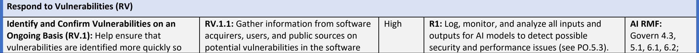
原本照合メモ: 原本25〜27ページのRV.1〜RV.3を復元。RV.1.1の定義・タスク・R2/N1/R3と参考情報、RV.2.2のR2/C1と参考情報をページ間で接続。ブラウザ表示確認は別途未完了。
| プラクティス | タスク | 優先度 | AIモデル開発に固有の推奨事項［R］、考慮事項［C］、注記［N］ | 参考情報 |
|---|---|---|---|---|
| 脆弱性への対応（RV） | ||||
| 脆弱性を継続的に特定・確認する（RV.1）：脆弱性をより迅速に特定し、リスクに応じてより迅速に修復できるようにすることで、攻撃者が攻撃できる期間を短縮する。 | RV.1.1：ソフトウェアおよびそのソフトウェアが使用する第三者のコンポーネントに潜在する脆弱性について、ソフトウェアの取得者、利用者、公開情報源から情報を収集し、信頼できるすべての報告を調査する。 | 高 | R1：セキュリティと性能に関する潜在的な問題を検出するため、AIモデルのすべての入力と出力を記録、監視、分析する（PO.5.3参照）。 R2：セキュリティと性能に関する潜在的な問題を報告する仕組みを、AIモデルの利用者に周知する。 N1：ここでいう「利用者」とは、AIモデルを使用するAIシステムの製造者と取得者を指す。 R3：AIモデルの構築に使用する機械学習フレームワークやライブラリに関する事項も含め、AIに関連する懸念事項の情報を得るため、脆弱性とインシデントのデータベースを監視する。 | AI RMF: Govern 4.3, 5.1, 6.1, 6.2; Measure 1.2, 2.4, 2.5, 2.7, 3.1, 3.2, 3.3; Manage 4.1 OWASP: LLM03-7a, LLM09, LLM10 |
| RV.1.2：ソフトウェアのコードをレビュー、解析、および／またはテストし、これまで検出されていなかった脆弱性を特定するか、その存在を確認する。 | 中 | R1：これまで検出されていなかった脆弱性を特定するため、AIモデルを頻繁にスキャンし、テストする。 R2：継続的なスキャンとテストには主に自動化を利用し、必要に応じて人を介在させる。 R3：AIモデルを定期的に監査する。 | AI RMF: Govern 4.3; Measure 1.3, 2.4, 2.7, 3.1; Manage 4.1 OWASP: LLM03-7b, LLM03-7d | |
| RV.1.3：脆弱性の開示と修復に関する方針を定め、その方針を支えるために必要な役割、責任、プロセスを実装する。 | 中 | R1：組織の脆弱性開示・修復方針に、AIモデルの脆弱性を含める。 R2：AIモデルに内在する限界と、遭遇したサイバーセキュリティ上の問題を報告する方法を、AIモデルの利用者に周知する。 | AI RMF: Govern 4.3, 5.1, 6.1; Measure 3.1, 3.3; Manage 4.3 | |
| 脆弱性を評価し、優先順位を付け、修復する（RV.2）：リスクに応じた脆弱性の修復を支援し、攻撃者が攻撃できる期間を短縮する。 | RV.2.1：各脆弱性を分析し、その修復またはその他のリスク対応を計画するために十分なリスク情報を収集する。 | 中 | N1：これには、正常な挙動からの逸脱を検出するため、生成AIおよびデュアルユース基盤モデルの入力と出力を詳細に分析することが含まれる場合がある。 | AI RMF: Govern 4.3, 5.1, 6.1; Measure 2.7, 3.1; Manage 1.2, 2.3, 4.1 Adv ML |
| RV.2.2：脆弱性に対するリスク対応を計画し、実施する。 | 高 | R1：AIモデルのリスク対応では、モデルの再構築に伴う可能性のある時間と費用を考慮するべきである。 R2：AIモデルの使用を停止する時点と、以前のバージョンおよびそのコンポーネントにロールバックする時点について、基準とプロセスを定め、実装する。 C1：AIモデルのリスクに十分対処できるまで、いつでもAIモデルの使用を停止して他の手段で運用を継続できるよう備えることを検討する。 | AI RMF: Govern 5.1, 5.2, 6.1; Measure 3.3; Manage 1.3, 2.1, 2.3, 2.4, 4.1 | |
| 脆弱性を分析して根本原因を特定する（RV.3）：今後の脆弱性の発生頻度を低減する。 | RV.3.1：特定した脆弱性を分析し、その根本原因を特定する。 | 中 | N1：訓練・テスト・ファインチューニング・アラインメント用データを事後にレビューできれば、一部の根本原因の特定に役立つ。 | AI RMF: Govern 5.1, 6.1; Measure 2.7, 3.1; Manage 2.3, 4.1 |
| RV.3.2：根本原因を経時的に分析し、特定のセキュアコーディングのプラクティスが一貫して守られていないといったパターンを特定する。 | 中 | SSDF 1.1への追加事項なし | AI RMF: Govern 5.1, 6.1; Measure 2.7, 3.1; Manage 4.1, 4.3 | |
| RV.3.3：ある種類の脆弱性を根絶するため、ソフトウェアに類似の脆弱性がないかレビューし、外部からの報告を待たずに先回りして修正する。 | 中 | SSDF 1.1への追加事項なし | AI RMF: Govern 5.1, 5.2, 6.1; Measure 2.7, 3.1; Manage 4.1, 4.2, 4.3 | |
| RV.3.4：SDLCのプロセスをレビューし、必要に応じて更新することで、ソフトウェアの更新版や新たに作成するソフトウェアで根本原因が再発することを防ぐ（またはその可能性を低減する）。 | 中 | SSDF 1.1への追加事項なし | AI RMF: Govern 5.2, 6.1; Measure 2.7, 3.1; Manage 4.2, 4.3 | |
References
参考文献
[1] Executive Order 14110 (2023) Safe, Secure, and Trustworthy Development and Use of Artificial Intelligence. (The White House, Washington, DC), DCPD-202300949, October 30, 2022. Available at https://www.govinfo.gov/app/details/DCPD-202300949
[2] National Institute of Standards and Technology (2023) Artificial Intelligence Risk Management Framework (AI RMF 1.0). (National Institute of Standards and Technology, Gaithersburg, MD) NIST Artificial Intelligence (AI) Report, NIST AI 100-1.
[1] 行政命令14110（2023）『人工知能の安全、セキュアで信頼できる開発と利用』（原題：Safe, Secure, and Trustworthy Development and Use of Artificial Intelligence）。ホワイトハウス（米国ワシントンDC）、DCPD-202300949、2022年10月30日。入手先：https://www.govinfo.gov/app/details/DCPD-202300949
[2] 米国国立標準技術研究所（2023）『人工知能リスク管理フレームワーク（AI RMF 1.0）』（原題：Artificial Intelligence Risk Management Framework）。米国国立標準技術研究所（メリーランド州ゲイサーズバーグ）、NIST人工知能（AI）報告書、NIST AI 100-1。
https://doi.org/10.6028/NIST.AI.100-1
https://doi.org/10.6028/NIST.AI.100-1
[3] Vassilev A, Oprea A, Fordyce A, Anderson H (2024) Adversarial Machine Learning: A Taxonomy and Terminology of Attacks and Mitigations. (National Institute of Standards and Technology, Gaithersburg, MD) NIST Artificial Intelligence (AI) Report, NIST AI 100-2e2023. https://doi.org/10.6028/NIST.AI.100-2e2023
[3] Vassilev A、Oprea A、Fordyce A、Anderson H（2024）Adversarial Machine Learning: A Taxonomy and Terminology of Attacks and Mitigations.（National Institute of Standards and Technology、Gaithersburg, MD）NIST Artificial Intelligence (AI) Report、NIST AI 100-2e2023。https://doi.org/10.6028/NIST.AI.100-2e2023
[4] Schwartz R, Vassilev A, Greene K, Perine L, Burt A, Hall P (2022) Towards a Standard for Identifying and Managing Bias in Artificial Intelligence. (National Institute of Standards and Technology, Gaithersburg, MD), NIST Special Publication (SP) 1270. https://doi.org/10.6028/NIST.SP.1270
[4] Schwartz R、Vassilev A、Greene K、Perine L、Burt A、Hall P（2022）Towards a Standard for Identifying and Managing Bias in Artificial Intelligence.（National Institute of Standards and Technology、Gaithersburg, MD）、NIST Special Publication (SP) 1270。https://doi.org/10.6028/NIST.SP.1270
[5] NIST (2024) Dioptra. (National Institute of Standards and Technology, Gaithersburg, MD.) Available at https://pages.nist.gov/dioptra/
[5] NIST（2024）Dioptra.（National Institute of Standards and Technology、Gaithersburg, MD.）入手先：https://pages.nist.gov/dioptra/
[6] Souppaya MP, Scarfone KA, Dodson DF (2022) Secure Software Development
[6] Souppaya MP、Scarfone KA、Dodson DF（2022）Secure Software Development
Framework (SSDF) Version 1.1: Recommendations for Mitigating the Risk of Software Vulnerabilities. (National Institute of Standards and Technology, Gaithersburg, MD), NIST Special Publication (SP) 800-218. https://doi.org/10.6028/NIST.SP.800-218
[7] Executive Order 14028 (2021) Improving the Nation’s Cybersecurity. (The White House, Washington, DC), DCPD-202100401, May 12, 2021. Available at https://www.govinfo.gov/app/details/DCPD-202100401
Framework (SSDF) Version 1.1: Recommendations for Mitigating the Risk of Software Vulnerabilities。米国国立標準技術研究所（メリーランド州ゲイサーズバーグ）、NIST特別刊行物（SP）800-218。https://doi.org/10.6028/NIST.SP.800-218
[7] 行政命令14028（2021）『国家のサイバーセキュリティの改善』（原題：Improving the Nation’s Cybersecurity）。ホワイトハウス（米国ワシントンDC）、DCPD-202100401、2021年5月12日。入手先：https://www.govinfo.gov/app/details/DCPD-202100401
[8] National Institute of Standards and Technology (2024) The NIST Cybersecurity Framework (CSF) 2.0 (National Institute of Standards and Technology, Gaithersburg, MD). https://doi.org/10.6028/NIST.CSWP.29
[8] National Institute of Standards and Technology（2024）The NIST Cybersecurity Framework (CSF) 2.0（National Institute of Standards and Technology、Gaithersburg, MD）。https://doi.org/10.6028/NIST.CSWP.29
[9] Joint Task Force (2020) Security and Privacy Controls for Information Systems and Organizations. (National Institute of Standards and Technology, Gaithersburg, MD), NIST Special Publication (SP) 800-53, Rev. 5. Includes updates as of December 10, 2020. https://doi.org/10.6028/NIST.SP.800-53r5
[9] Joint Task Force（2020）Security and Privacy Controls for Information Systems and Organizations.（National Institute of Standards and Technology、Gaithersburg, MD）、NIST Special Publication (SP) 800-53, Rev. 5。2020年12月10日時点の更新を含む。https://doi.org/10.6028/NIST.SP.800-53r5
[10] Boyens JM, Smith AM, Bartol N, Winkler K, Holbrook A, Fallon M (2022) Cybersecurity Supply Chain Risk Management Practices for Systems and Organizations. (National Institute of Standards and Technology, Gaithersburg, MD), NIST Special Publication (SP) 800-161r1. https://doi.org/10.6028/NIST.SP.800-161r1
[10] Boyens JM、Smith AM、Bartol N、Winkler K、Holbrook A、Fallon M（2022）Cybersecurity Supply Chain Risk Management Practices for Systems and Organizations.（National Institute of Standards and Technology、Gaithersburg, MD）、NIST Special Publication (SP) 800-161r1。https://doi.org/10.6028/NIST.SP.800-161r1
[11] NIST (2023) NIST AI RMF Playbook. (National Institute of Standards and Technology, Gaithersburg, MD.) Available at https://airc.nist.gov/AI_RMF_Knowledge_Base/Playbook
[11] NIST（2023）NIST AI RMF Playbook.（National Institute of Standards and Technology、Gaithersburg, MD.）入手先：https://airc.nist.gov/AI_RMF_Knowledge_Base/Playbook
[12] National Institute of Standards and Technology (2024) Artificial Intelligence Risk Management Framework: Generative Artificial Intelligence Profile. (National Institute of Standards and Technology, Gaithersburg, MD), NIST Artificial Intelligence (AI) Report, NIST AI 600-1. Available at https://airc.nist.gov/docs/NIST.AI.600-1.GenAI-Profile.ipd.pdf
[12] National Institute of Standards and Technology（2024）Artificial Intelligence Risk Management Framework: Generative Artificial Intelligence Profile.（National Institute of Standards and Technology、Gaithersburg, MD）、NIST Artificial Intelligence (AI) Report、NIST AI 600-1。入手先：https://airc.nist.gov/docs/NIST.AI.600-1.GenAI-Profile.ipd.pdf
Standards and Technology, Gaithersburg, MD), NIST Artificial Intelligence (AI) Report, NIST AI 600-1. Available at https://airc.nist.gov/docs/NIST.AI.600-1.GenAI-Profile.ipd.pdf
[13] National Institute of Standards and Technology (2020) NIST Privacy Framework: A Tool for Improving Privacy Through Enterprise Risk Management, Version 1.0. (National Institute of Standards and Technology, Gaithersburg, MD), NIST Cybersecurity White Paper (CSWP) NIST CSWP 10. https://doi.org/10.6028/NIST.CSWP.10
標準技術研究所、メリーランド州ゲイサーズバーグ）、NIST人工知能（AI）報告書、NIST AI 600-1。入手先：https://airc.nist.gov/docs/NIST.AI.600-1.GenAI-Profile.ipd.pdf
[13] 米国国立標準技術研究所（2020）『NISTプライバシーフレームワーク：エンタープライズリスク管理によるプライバシー改善のためのツール、バージョン1.0』（原題：NIST Privacy Framework: A Tool for Improving Privacy Through Enterprise Risk Management）。米国国立標準技術研究所（メリーランド州ゲイサーズバーグ）、NISTサイバーセキュリティ白書（CSWP）NIST CSWP 10。https://doi.org/10.6028/NIST.CSWP.10
[14] Stine KM, Quinn SD, Witte GA, Gardner RK (2020) Integrating Cybersecurity and Enterprise Risk Management (ERM). (National Institute of Standards and Technology,
[14] Stine KM、Quinn SD、Witte GA、Gardner RK（2020）『サイバーセキュリティとエンタープライズリスク管理（ERM）の統合』（原題：Integrating Cybersecurity and Enterprise Risk Management）。米国国立標準技術研究所（
Gaithersburg, MD), NIST Interagency or Internal Report (IR) 8286. https://doi.org/10.6028/NIST.IR.8286
[15] OWASP (2023) OWASP Top 10 for LLM Applications Version 1.1. Available at https://llmtop10.com
[16] Waltermire DA, Scarfone KA, Casipe M (2011) Specification for the Open Checklist Interactive Language (OCIL) Version 2.0. (National Institute of Standards and Technology, Gaithersburg, MD), NIST Interagency or Internal Report (IR) 7692. https://doi.org/10.6028/NIST.IR.7692
[17] Ross RS, McEvilley M, Winstead M (2022) Engineering Trustworthy Secure Systems. (National Institute of Standards and Technology, Gaithersburg, MD), NIST Special Publication (SP) NIST SP 800-160v1r1. https://doi.org/10.6028/NIST.SP.800-160v1r1
[18] NIST/SEMATECH (2012) What is EDA? Engineering Statistics Handbook, eds Croarkin C, Tobias P (National Institute of Standards and Technology, Gaithersburg, MD), Section 1.1.1. Available at https://www.itl.nist.gov/div898/handbook/eda/section1/eda11.htm
メリーランド州ゲイサーズバーグ）、NIST省庁間報告書または内部報告書（IR）8286。https://doi.org/10.6028/NIST.IR.8286
[15] OWASP（2023）OWASP Top 10 for LLM Applicationsバージョン1.1。入手先：https://llmtop10.com
[16] Waltermire DA、Scarfone KA、Casipe M（2011）『Open Checklist Interactive Language（OCIL）バージョン2.0仕様』（原題：Specification for the Open Checklist Interactive Language）。米国国立標準技術研究所（メリーランド州ゲイサーズバーグ）、NIST省庁間報告書または内部報告書（IR）7692。https://doi.org/10.6028/NIST.IR.7692
[17] Ross RS、McEvilley M、Winstead M（2022）『信頼できるセキュアシステムの工学』（原題：Engineering Trustworthy Secure Systems）。米国国立標準技術研究所（メリーランド州ゲイサーズバーグ）、NIST特別刊行物（SP）NIST SP 800-160v1r1。https://doi.org/10.6028/NIST.SP.800-160v1r1
[18] NIST/SEMATECH（2012）『EDAとは何か？』Engineering Statistics Handbook、編集者 Croarkin C、Tobias P、米国国立標準技術研究所（メリーランド州ゲイサーズバーグ）、セクション1.1.1。入手先：https://www.itl.nist.gov/div898/handbook/eda/section1/eda11.htm
[19] Reznik L (2022) Intelligent Security Systems: How Artificial Intelligence, Machine Learning and Data Science Work For and Against Computer Security. (Wiley-IEEE Press.) Available at https://ieeexplore.ieee.org/book/9562694
[19] Reznik L（2022）Intelligent Security Systems: How Artificial Intelligence, Machine Learning and Data Science Work For and Against Computer Security.（Wiley-IEEE Press.）入手先：https://ieeexplore.ieee.org/book/9562694
Appendix A. Glossary
翻訳準備中
artificial intelligence — A machine-based system that can, for a given set of human-defined objectives, make predictions, recommendations, or decisions influencing real or virtual environments. [1]
翻訳準備中
artificial intelligence model — A component of an information system that implements AI technology and uses computational, statistical, or machine-learning techniques to produce outputs from a given set of inputs. [1]
翻訳準備中
artificial intelligence red-teaming — A structured testing effort to find flaws and vulnerabilities in an AI system, often in a controlled environment and in collaboration with developers of AI. [1]
翻訳準備中
artificial intelligence system — Any data system, software, hardware, application, tool, or utility that operates in whole or in part using AI. [1]
翻訳準備中
data science — The field that combines domain expertise, programming skills, and knowledge of mathematics and statistics to extract meaningful insights from data. [19]
翻訳準備中
dual-use foundation model — An AI model that is trained on broad data; generally uses self-supervision; contains at least tens of billions of parameters; is applicable across a wide range of contexts; and that exhibits, or could be easily modified to exhibit, high levels of performance at tasks that pose a serious risk to security, national economic security, national public health or safety, or any combination of those matters, such as by:
翻訳準備中
(i).substantially lowering the barrier of entry for non-experts to design, synthesize, acquire, or use chemical, biological, radiological, or nuclear (CBRN) weapons;
(i).翻訳準備中
(ii).enabling powerful offensive cyber operations through automated vulnerability discovery and exploitation against a wide range of potential targets of cyber attacks; or
(ii).翻訳準備中
(iii).permitting the evasion of human control or oversight through means of deception or obfuscation.
(iii).翻訳準備中
Models meet this definition even if they are provided to end users with technical safeguards that attempt to prevent users from taking advantage of the relevant unsafe capabilities. [1]
翻訳準備中
generative artificial intelligence — The class of AI models that emulate the structure and characteristics of input data in order to generate derived synthetic content. This can include images, videos, audio, text, and other digital content. [1]
翻訳準備中
model weight — A numerical parameter within an AI model that helps determine the model’s outputs in response to inputs. [1]
翻訳準備中
provenance — Metadata pertaining to the origination or source of specified data. [13]
翻訳準備中